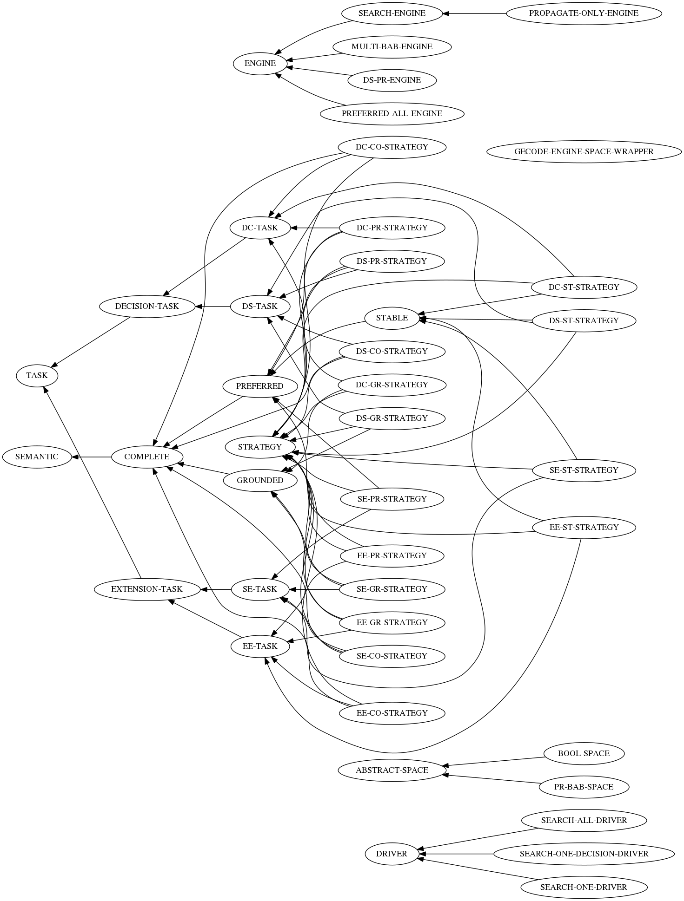

Table of Contents
- 1. header
- 2. package definition package
- 3. optimization settings optimization
- 4. cover annotate t cover
- 5. tables
- 6. utils refile
- 7. defvars refile
- 8. defgenerics refile
- 8.1. defgeneric constrain-space defgeneric
- 8.2. defgeneric constrain-arg-if-needed defgeneric
- 8.3. defgeneric constrain-arg defgeneric
- 8.4. defgeneric branch-space defgeneric
- 8.5. defgeneric make-search-engine defgeneric
- 8.6. defgeneric drive-search-and-print defgeneric
- 8.7. defgeneric drive-search-and-collect defgeneric
- 8.8. defgeneric translate-problem defgeneric
- 8.9. defgeneric search-statistics defgeneric
- 8.10. defgeneric strategy-driver-initargs defgeneric
- 8.11. defgeneric strategy-driver-class defgeneric
- 9. early functions
- 10. defclasses refile
- 10.1. space classes
- 10.2. semantic classes
- 10.3. task classes refile
- 10.3.1. defclass task defclass
- 10.3.2. defclass extension-task (task) defclass
- 10.3.3. defclass ee-task (extension-task) defclass
- 10.3.4. defclass se-task (extension-task) defclass
- 10.3.5. defclass decision-task (task) defclass
- 10.3.6. defclass dc-task (decision-task) defclass
- 10.3.7. defclass ds-task (decision-task) defclass
- 10.4. driver classes refile
- 10.5. engine classes
- 10.5.1. defclass engine defclass
- 10.5.2. defclass search-engine (engine) defclass
- 10.5.3. defclass propagate-only-engine (search-engine) defclass
- 10.5.4. defclass multi-bab-engine (engine) defclass
- 10.5.5. defclass preferred-all-engine (engine) defclass
- 10.5.6. defclass ds-pr-engine (engine) defclass
- 10.6. strategy classes
- 11. initialize-instance methods refile
- 12. print-object methods refile
- 13. other
- 13.1. defmacro e-class-by-strategy tmp defmacro
- 13.2. defun make-dfs-engine-or-gist defun
- 13.3. defun make-bab-engine-or-gist defun
- 13.4. defmacro with-post-env-setup defmacro
- 13.5. defmacro with-local-post-env defmacro
- 13.6. defun constrain-conflict-free defun
- 13.7. defun constrain-in-eqv-acceptable defun
- 13.8. defun constrain-complete defun
- 13.9. defun constrain-stable defun
- 13.10. deftype input deftype
- 13.11. defmethod (setf task-hash) defmethod
- 13.12. defmethod task-arg defmethod
- 13.13. defun prepare-space defun
- 13.14. solve print-answer collect-answer
- 13.15. constrain-arg-if-needed
- 13.16. constrain-arg
- 13.17. defmacro branch-with-logging defmacro
- 13.18. branch-space
- 13.19. make-search-engine refile
- 13.19.1. defmethod make-search-engine defmethod
- 13.19.2. defmethod make-search-engine defmethod
- 13.19.3. defmethod make-search-engine defmethod
- 13.19.4. defmethod make-search-engine defmethod
- 13.19.5. defmethod make-search-engine defmethod
- 13.19.6. defmethod make-search-engine defmethod
- 13.19.7. defmethod make-search-engine defmethod
- 13.19.8. defmethod make-search-engine ds-pr defmethod
- 13.20. defun make-normal-engine tmp defun
- 13.21. defun make-normal-engine-bab tmp defun
- 13.22. defstruct gecode-engine-space-wrapper defstruct
- 13.23. defun gecode-engine-space-wrapper-next defun
- 13.24. search-statistics
- 13.25. drive-search-and-* refile
- 13.25.1. drive-search-and-* :around (driver engine)
- 13.25.2. drive-search-and-* (search-all-driver preferred-all-engine)
- 13.25.3. drive-search-and-* (search-all-driver t)
- 13.25.4. drive-search-and-* (search-one-driver t)
- 13.25.5. drive-search-and-* (t multi-bab-engine)
- 13.25.6. drive-search-and-* (search-all-driver multi-bab-engine)
- 13.25.7. drive-search-and-* (search-one-decision-driver t)
- 13.26. multi-bab-engine refile
- 13.27. ds-pr-engine refile
- 13.28. defmethod constrain-arg-if-needed defmethod
- 13.29. defmethod gecode-engine defmethod
- 13.30. defmethod next-solution-fn ds-pr-engine defmethod
- 13.31. defmethod space-delete-fn ds-pr-engine defmethod
- 13.32. translate methods frob translate
- 13.33. strategy
- 13.33.1. defmethod strategy-task-class defmethod
- 13.33.2. defmethod strategy-task-class defmethod
- 13.33.3. defmethod strategy-task-class defmethod
- 13.33.4. defmethod strategy-task-class defmethod
- 13.33.5. defmethod strategy-semantic-class defmethod
- 13.33.6. defmethod strategy-semantic-class defmethod
- 13.33.7. defmethod strategy-semantic-class defmethod
- 13.33.8. defmethod strategy-semantic-class defmethod
- 13.33.9. defmethod strategy-driver-class defmethod
- 13.33.10. defmethod strategy-driver-class defmethod
- 13.33.11. defmethod strategy-driver-class defmethod
- 13.33.12. defmethod strategy-driver-initargs defmethod
- 13.33.13. defmethod strategy-driver-initargs defmethod
- 13.33.14. defmethod strategy-driver-initargs defmethod
- 13.33.15. defmethod strategy-constraints defmethod
- 13.33.16. defmethod strategy-constraints defmethod
- 13.33.17. defmethod strategy-constraint-arg defmethod
- 13.33.18. defmethod strategy-constraint-arg defmethod
- 13.33.19. defmethod strategy-constraint-arg defmethod
- 13.33.20. defun strategy-make-driver defun
- 13.33.21. defun strategy-make-space defun
- 13.33.22. defmethod strategy-driver-initargs defmethod
- 13.33.23. defmethod strategy-space-class defmethod
- 13.33.24. defmethod strategy-constraint-arg defmethod
- 13.33.25. defmethod strategy-constraint-arg defmethod
- 13.33.26. defmethod strategy-engine-class defmethod
- 13.33.27. defmethod strategy-engine-class defmethod
- 13.33.28. defmethod strategy-engine-class defmethod
- 13.33.29. defmethod strategy-engine-class defmethod
- 13.33.30. defun list-strategy-classes defun
- 13.33.31. defun list-strategies defun
- 13.33.32. defmethod find-applicable-strategies defmethod
- 13.33.33. defmethod find-applicable-strategies defmethod
- 13.33.34. defun choose-strategy defun
- 13.33.35. defun choose-strategy* defun
- 13.33.36. defmethod describe-object strategy defmethod
- 13.33.37. defmethod strategy-space-class defmethod
- 13.33.38. defun describe-strategies defun
- 13.34. cli interface refile
- 13.34.1. defun describe-all-strategies-or-for-problem defun
- 13.34.2. defun print-informational-message defun
- 13.34.3. defun print-supported-graph-formats defun
- 13.34.4. defun print-supported-problems defun
- 13.34.5. defun run-repl defun
- 13.34.6. defun run-self-check defun
- 13.34.7. defun adopt-keywords defun
- 13.34.8. defun parse-g-arg defun
- 13.34.9. defun parse-problem defun
- 13.34.10. defun main%% defun
- 13.34.11. defun main% defun
- 13.34.12. defun cl-user::main defun
- 14. cover annotate nil cover
1 header
;;; -*- Mode:Lisp; Syntax:ANSI-Common-Lisp; -*- ;;; ASGL an abstract argumentation solver in ECL and GECODE. ;;; Copyright (C) 2015 Kilian Sprotte ;;; This program is free software: you can redistribute it and/or modify ;;; it under the terms of the GNU General Public License as published by ;;; the Free Software Foundation, either version 3 of the License, or ;;; (at your option) any later version. ;;; This program is distributed in the hope that it will be useful, ;;; but WITHOUT ANY WARRANTY; without even the implied warranty of ;;; MERCHANTABILITY or FITNESS FOR A PARTICULAR PURPOSE. See the ;;; GNU General Public License for more details. ;;; You should have received a copy of the GNU General Public License ;;; along with this program. If not, see <http://www.gnu.org/licenses/>.
2 package definition package
(defpackage :asgl (:use :cl :early :alexandria :gecode)) (in-package :asgl)
3 optimization settings optimization
(declaim (optimize (debug 3) (safety 3) (speed 0))) #+nil(declaim (optimize (debug 0) (safety 1) (speed 3) (space 0)))
4 cover annotate t cover
(eval-when (:compile-toplevel :execute) (cover:annotate t))
5 tables
5.1 classes diagram
(defmethod cl-dot:graph-object-node ((graph (eql 'classes)) (obj standard-class)) (make-instance 'cl-dot:node :attributes `(:label ,(princ-to-string (class-name obj))))) (defmethod cl-dot:graph-object-node ((graph (eql 'classes)) (obj structure-class)) (make-instance 'cl-dot:node :attributes `(:label ,(princ-to-string (class-name obj))))) (defmethod cl-dot:graph-object-pointed-to-by ((graph (eql 'classes)) (object t)) (clos:class-direct-subclasses object)) (labels ((list-classes () (let (list (asgl-package (find-package :asgl))) (do-symbols (x asgl-package list) (when (and (eql asgl-package (symbol-package x)) (ignore-errors (find-class x))) (push (find-class x) list)))))) (cl-dot:dot-graph (cl-dot:generate-graph-from-roots 'classes (list-classes) '(:rankdir "RL")) "classes-diagram.png" :format :png))

5.2 list of classes
(let ((list) (asgl-package (find-package :asgl))) (do-symbols (x asgl-package) (when (and (eql asgl-package (symbol-package x)) (ignore-errors (find-class x))) (push (list x (mapcar #'class-name (clos:class-direct-superclasses (find-class x)))) list))) (list* (list :name :list) (sort list #'string< :key (lambda (x) (string (car x))))))
| :NAME | :LIST |
| ABSTRACT-SPACE | (STANDARD-OBJECT) |
| BOOL-SPACE | (ABSTRACT-SPACE) |
| COMPLETE | (SEMANTIC) |
| DC-CO-STRATEGY | (DC-TASK COMPLETE STRATEGY) |
| DC-GR-STRATEGY | (DC-TASK GROUNDED STRATEGY) |
| DC-PR-STRATEGY | (DC-TASK PREFERRED STRATEGY) |
| DC-ST-STRATEGY | (DC-TASK STABLE STRATEGY) |
| DC-TASK | (DECISION-TASK) |
| DECISION-TASK | (TASK) |
| DRIVER | (STANDARD-OBJECT) |
| DS-CO-STRATEGY | (DS-TASK COMPLETE STRATEGY) |
| DS-GR-STRATEGY | (DS-TASK GROUNDED STRATEGY) |
| DS-PR-ENGINE | (ENGINE) |
| DS-PR-STRATEGY | (DS-TASK PREFERRED STRATEGY) |
| DS-ST-STRATEGY | (DS-TASK STABLE STRATEGY) |
| DS-TASK | (DECISION-TASK) |
| EE-CO-STRATEGY | (EE-TASK COMPLETE STRATEGY) |
| EE-GR-STRATEGY | (EE-TASK GROUNDED STRATEGY) |
| EE-PR-STRATEGY | (EE-TASK PREFERRED STRATEGY) |
| EE-ST-STRATEGY | (EE-TASK STABLE STRATEGY) |
| EE-TASK | (EXTENSION-TASK) |
| ENGINE | (STANDARD-OBJECT) |
| EXTENSION-TASK | (TASK) |
| GECODE-ENGINE-SPACE-WRAPPER | (STRUCTURE-OBJECT) |
| GROUNDED | (COMPLETE) |
| MULTI-BAB-ENGINE | (ENGINE) |
| PR-BAB-SPACE | (ABSTRACT-SPACE) |
| PREFERRED | (COMPLETE) |
| PREFERRED-ALL-ENGINE | (ENGINE) |
| PROPAGATE-ONLY-ENGINE | (SEARCH-ENGINE) |
| SE-CO-STRATEGY | (SE-TASK COMPLETE STRATEGY) |
| SE-GR-STRATEGY | (SE-TASK GROUNDED STRATEGY) |
| SE-PR-STRATEGY | (SE-TASK PREFERRED STRATEGY) |
| SE-ST-STRATEGY | (SE-TASK STABLE STRATEGY) |
| SE-TASK | (EXTENSION-TASK) |
| SEARCH-ALL-DRIVER | (DRIVER) |
| SEARCH-ENGINE | (ENGINE) |
| SEARCH-ONE-DECISION-DRIVER | (DRIVER) |
| SEARCH-ONE-DRIVER | (DRIVER) |
| SEMANTIC | (STANDARD-OBJECT) |
| STABLE | (PREFERRED) |
| STRATEGY | (STANDARD-OBJECT) |
| TASK | (STANDARD-OBJECT) |
5.3 list of generic functions
(let ((list) (asgl-package (find-package :asgl))) (do-symbols (x asgl-package) (when (and (eql asgl-package (symbol-package x)) (fboundp x) (typep (symbol-function x) 'generic-function)) (push (list x (swank-backend:arglist x)) list))) (list* (list :name :arglist) (sort list #'string< :key (lambda (x) (string (car x))))))
| :NAME | :ARGLIST |
| BRANCH-SPACE | (SPACE TASK SEMANTIC) |
| CONSTRAIN-ARG | (SPACE SEMANTIC TASK) |
| CONSTRAIN-ARG-IF-NEEDED | (SPACE SEMANTIC TASK) |
| CONSTRAIN-SPACE | (STRATEGY SPACE GRAPH) |
| DRIVE-SEARCH-AND-COLLECT | (TASK ENGINE) |
| DRIVE-SEARCH-AND-PRINT | (TASK ENGINE) |
| ENGINE-SPACE | (CLOS::SELF) |
| ENGINE-TASK | (CLOS::SELF) |
| ENGINE-VECTOR | (CLOS::SELF) |
| FIND-APPLICABLE-STRATEGIES | (TASK SEMANTIC) |
| FOREIGN-SPACE | (CLOS::SELF) |
| GECODE-ENGINE | (CLOS::SELF) |
| MAKE-SEARCH-ENGINE | (STRATEGY SPACE TASK SEMANTIC VECTOR) |
| NEXT-SOLUTION-FN | (CLOS::SELF) |
| NO-SOLUTION-MEANS-INFERRED | (CLOS::SELF) |
| SEARCH-STATISTICS | (ENGINE) |
| SPACE-COLLECT-FN | (CLOS::SELF) |
| SPACE-DELETE-FN | (CLOS::SELF) |
| SPACE-PRINT-FN | (CLOS::SELF) |
| STRATEGY-CONSTRAINT-ARG | (STRATEGY) |
| STRATEGY-CONSTRAINTS | (STRATEGY) |
| STRATEGY-DRIVER-CLASS | (STRATEGY) |
| STRATEGY-DRIVER-INITARGS | (STRATEGY) |
| STRATEGY-ENGINE-CLASS | (STRATEGY) |
| STRATEGY-SEMANTIC-CLASS | (STRATEGY) |
| STRATEGY-SPACE-CLASS | (STRATEGY) |
| STRATEGY-TASK-CLASS | (STRATEGY) |
| SUB-ENGINE | (CLOS::SELF) |
| TASK-ARG | (TASK) |
| TASK-ARG-NAME | (CLOS::SELF) |
| TASK-HASH | (CLOS::SELF) |
| TRANSLATE-PROBLEM | (TASK SEMANTIC) |
5.4 class / gf
(let ((asgl-package (find-package :asgl))) (labels ((foo (class gf) (let ((arglist (clos:generic-function-lambda-list gf)) (methods (clos:generic-function-methods gf))) (loop for i from 0 below (length arglist) collect (some (lambda (method) (not (null (subtypep class (nth i (clos:method-specializers method)))))) methods)))) (list-classes () (let ((list)) (do-symbols (x asgl-package) (when (and (eql asgl-package (symbol-package x)) (ignore-errors (find-class x))) (push x list))) (mapcar #'find-class (sort list #'string< :key (lambda (x) (string x)))))) (list-gfs () (let ((list)) (do-symbols (x asgl-package) (when (and (eql asgl-package (symbol-package x)) (fboundp x) (typep (symbol-function x) 'generic-function)) (push x list))) (mapcar #'symbol-function (sort list #'string< :key (lambda (x) (string x))))))) (let (result) (loop for class in (list-classes) do (loop for gf in (list-gfs) for foo = (foo class gf) when (some #'identity foo) do (push (list (class-name class) (clos:generic-function-name gf) (clos:generic-function-lambda-list gf) (princ-to-string foo)) result))) (nreverse result))))
| ABSTRACT-SPACE | BRANCH-SPACE | (SPACE TASK SEMANTIC) | (T T T) |
| ABSTRACT-SPACE | CONSTRAIN-ARG | (SPACE SEMANTIC TASK) | (T T NIL) |
| ABSTRACT-SPACE | CONSTRAIN-ARG-IF-NEEDED | (SPACE SEMANTIC TASK) | (T T T) |
| ABSTRACT-SPACE | DRIVE-SEARCH-AND-COLLECT | (TASK ENGINE) | (T T) |
| ABSTRACT-SPACE | DRIVE-SEARCH-AND-PRINT | (TASK ENGINE) | (T T) |
| ABSTRACT-SPACE | FOREIGN-SPACE | (CLOS::SELF) | (T) |
| ABSTRACT-SPACE | MAKE-SEARCH-ENGINE | (STRATEGY SPACE TASK SEMANTIC VECTOR) | (T T T T T) |
| ABSTRACT-SPACE | STRATEGY-SPACE-CLASS | (STRATEGY) | (T) |
| BOOL-SPACE | BRANCH-SPACE | (SPACE TASK SEMANTIC) | (T T T) |
| BOOL-SPACE | CONSTRAIN-ARG | (SPACE SEMANTIC TASK) | (T T NIL) |
| BOOL-SPACE | CONSTRAIN-ARG-IF-NEEDED | (SPACE SEMANTIC TASK) | (T T T) |
| BOOL-SPACE | DRIVE-SEARCH-AND-COLLECT | (TASK ENGINE) | (T T) |
| BOOL-SPACE | DRIVE-SEARCH-AND-PRINT | (TASK ENGINE) | (T T) |
| BOOL-SPACE | FOREIGN-SPACE | (CLOS::SELF) | (T) |
| BOOL-SPACE | MAKE-SEARCH-ENGINE | (STRATEGY SPACE TASK SEMANTIC VECTOR) | (T T T T T) |
| BOOL-SPACE | STRATEGY-SPACE-CLASS | (STRATEGY) | (T) |
| COMPLETE | BRANCH-SPACE | (SPACE TASK SEMANTIC) | (T T T) |
| COMPLETE | CONSTRAIN-ARG | (SPACE SEMANTIC TASK) | (T T NIL) |
| COMPLETE | CONSTRAIN-ARG-IF-NEEDED | (SPACE SEMANTIC TASK) | (T T T) |
| COMPLETE | DRIVE-SEARCH-AND-COLLECT | (TASK ENGINE) | (T T) |
| COMPLETE | DRIVE-SEARCH-AND-PRINT | (TASK ENGINE) | (T T) |
| COMPLETE | FIND-APPLICABLE-STRATEGIES | (TASK SEMANTIC) | (NIL T) |
| COMPLETE | MAKE-SEARCH-ENGINE | (STRATEGY SPACE TASK SEMANTIC VECTOR) | (T T T T T) |
| COMPLETE | STRATEGY-CONSTRAINTS | (STRATEGY) | (T) |
| COMPLETE | STRATEGY-SEMANTIC-CLASS | (STRATEGY) | (T) |
| COMPLETE | STRATEGY-SPACE-CLASS | (STRATEGY) | (T) |
| COMPLETE | TRANSLATE-PROBLEM | (TASK SEMANTIC) | (NIL T) |
| DC-CO-STRATEGY | BRANCH-SPACE | (SPACE TASK SEMANTIC) | (T T T) |
| DC-CO-STRATEGY | CONSTRAIN-ARG | (SPACE SEMANTIC TASK) | (T T T) |
| DC-CO-STRATEGY | CONSTRAIN-ARG-IF-NEEDED | (SPACE SEMANTIC TASK) | (T T T) |
| DC-CO-STRATEGY | DRIVE-SEARCH-AND-COLLECT | (TASK ENGINE) | (T T) |
| DC-CO-STRATEGY | DRIVE-SEARCH-AND-PRINT | (TASK ENGINE) | (T T) |
| DC-CO-STRATEGY | FIND-APPLICABLE-STRATEGIES | (TASK SEMANTIC) | (T T) |
| DC-CO-STRATEGY | MAKE-SEARCH-ENGINE | (STRATEGY SPACE TASK SEMANTIC VECTOR) | (T T T T T) |
| DC-CO-STRATEGY | NO-SOLUTION-MEANS-INFERRED | (CLOS::SELF) | (T) |
| DC-CO-STRATEGY | STRATEGY-CONSTRAINT-ARG | (STRATEGY) | (T) |
| DC-CO-STRATEGY | STRATEGY-CONSTRAINTS | (STRATEGY) | (T) |
| DC-CO-STRATEGY | STRATEGY-DRIVER-CLASS | (STRATEGY) | (T) |
| DC-CO-STRATEGY | STRATEGY-DRIVER-INITARGS | (STRATEGY) | (T) |
| DC-CO-STRATEGY | STRATEGY-ENGINE-CLASS | (STRATEGY) | (T) |
| DC-CO-STRATEGY | STRATEGY-SEMANTIC-CLASS | (STRATEGY) | (T) |
| DC-CO-STRATEGY | STRATEGY-SPACE-CLASS | (STRATEGY) | (T) |
| DC-CO-STRATEGY | STRATEGY-TASK-CLASS | (STRATEGY) | (T) |
| DC-CO-STRATEGY | TASK-ARG | (TASK) | (T) |
| DC-CO-STRATEGY | TASK-ARG-NAME | (CLOS::SELF) | (T) |
| DC-CO-STRATEGY | TASK-HASH | (CLOS::SELF) | (T) |
| DC-CO-STRATEGY | TRANSLATE-PROBLEM | (TASK SEMANTIC) | (T T) |
| DC-GR-STRATEGY | BRANCH-SPACE | (SPACE TASK SEMANTIC) | (T T T) |
| DC-GR-STRATEGY | CONSTRAIN-ARG | (SPACE SEMANTIC TASK) | (T T T) |
| DC-GR-STRATEGY | CONSTRAIN-ARG-IF-NEEDED | (SPACE SEMANTIC TASK) | (T T T) |
| DC-GR-STRATEGY | DRIVE-SEARCH-AND-COLLECT | (TASK ENGINE) | (T T) |
| DC-GR-STRATEGY | DRIVE-SEARCH-AND-PRINT | (TASK ENGINE) | (T T) |
| DC-GR-STRATEGY | FIND-APPLICABLE-STRATEGIES | (TASK SEMANTIC) | (T T) |
| DC-GR-STRATEGY | MAKE-SEARCH-ENGINE | (STRATEGY SPACE TASK SEMANTIC VECTOR) | (T T T T T) |
| DC-GR-STRATEGY | NO-SOLUTION-MEANS-INFERRED | (CLOS::SELF) | (T) |
| DC-GR-STRATEGY | STRATEGY-CONSTRAINT-ARG | (STRATEGY) | (T) |
| DC-GR-STRATEGY | STRATEGY-CONSTRAINTS | (STRATEGY) | (T) |
| DC-GR-STRATEGY | STRATEGY-DRIVER-CLASS | (STRATEGY) | (T) |
| DC-GR-STRATEGY | STRATEGY-DRIVER-INITARGS | (STRATEGY) | (T) |
| DC-GR-STRATEGY | STRATEGY-ENGINE-CLASS | (STRATEGY) | (T) |
| DC-GR-STRATEGY | STRATEGY-SEMANTIC-CLASS | (STRATEGY) | (T) |
| DC-GR-STRATEGY | STRATEGY-SPACE-CLASS | (STRATEGY) | (T) |
| DC-GR-STRATEGY | STRATEGY-TASK-CLASS | (STRATEGY) | (T) |
| DC-GR-STRATEGY | TASK-ARG | (TASK) | (T) |
| DC-GR-STRATEGY | TASK-ARG-NAME | (CLOS::SELF) | (T) |
| DC-GR-STRATEGY | TASK-HASH | (CLOS::SELF) | (T) |
| DC-GR-STRATEGY | TRANSLATE-PROBLEM | (TASK SEMANTIC) | (T T) |
| DC-PR-STRATEGY | BRANCH-SPACE | (SPACE TASK SEMANTIC) | (T T T) |
| DC-PR-STRATEGY | CONSTRAIN-ARG | (SPACE SEMANTIC TASK) | (T T T) |
| DC-PR-STRATEGY | CONSTRAIN-ARG-IF-NEEDED | (SPACE SEMANTIC TASK) | (T T T) |
| DC-PR-STRATEGY | DRIVE-SEARCH-AND-COLLECT | (TASK ENGINE) | (T T) |
| DC-PR-STRATEGY | DRIVE-SEARCH-AND-PRINT | (TASK ENGINE) | (T T) |
| DC-PR-STRATEGY | FIND-APPLICABLE-STRATEGIES | (TASK SEMANTIC) | (T T) |
| DC-PR-STRATEGY | MAKE-SEARCH-ENGINE | (STRATEGY SPACE TASK SEMANTIC VECTOR) | (T T T T T) |
| DC-PR-STRATEGY | NO-SOLUTION-MEANS-INFERRED | (CLOS::SELF) | (T) |
| DC-PR-STRATEGY | STRATEGY-CONSTRAINT-ARG | (STRATEGY) | (T) |
| DC-PR-STRATEGY | STRATEGY-CONSTRAINTS | (STRATEGY) | (T) |
| DC-PR-STRATEGY | STRATEGY-DRIVER-CLASS | (STRATEGY) | (T) |
| DC-PR-STRATEGY | STRATEGY-DRIVER-INITARGS | (STRATEGY) | (T) |
| DC-PR-STRATEGY | STRATEGY-ENGINE-CLASS | (STRATEGY) | (T) |
| DC-PR-STRATEGY | STRATEGY-SEMANTIC-CLASS | (STRATEGY) | (T) |
| DC-PR-STRATEGY | STRATEGY-SPACE-CLASS | (STRATEGY) | (T) |
| DC-PR-STRATEGY | STRATEGY-TASK-CLASS | (STRATEGY) | (T) |
| DC-PR-STRATEGY | TASK-ARG | (TASK) | (T) |
| DC-PR-STRATEGY | TASK-ARG-NAME | (CLOS::SELF) | (T) |
| DC-PR-STRATEGY | TASK-HASH | (CLOS::SELF) | (T) |
| DC-PR-STRATEGY | TRANSLATE-PROBLEM | (TASK SEMANTIC) | (T T) |
| DC-ST-STRATEGY | BRANCH-SPACE | (SPACE TASK SEMANTIC) | (T T T) |
| DC-ST-STRATEGY | CONSTRAIN-ARG | (SPACE SEMANTIC TASK) | (T T T) |
| DC-ST-STRATEGY | CONSTRAIN-ARG-IF-NEEDED | (SPACE SEMANTIC TASK) | (T T T) |
| DC-ST-STRATEGY | DRIVE-SEARCH-AND-COLLECT | (TASK ENGINE) | (T T) |
| DC-ST-STRATEGY | DRIVE-SEARCH-AND-PRINT | (TASK ENGINE) | (T T) |
| DC-ST-STRATEGY | FIND-APPLICABLE-STRATEGIES | (TASK SEMANTIC) | (T T) |
| DC-ST-STRATEGY | MAKE-SEARCH-ENGINE | (STRATEGY SPACE TASK SEMANTIC VECTOR) | (T T T T T) |
| DC-ST-STRATEGY | NO-SOLUTION-MEANS-INFERRED | (CLOS::SELF) | (T) |
| DC-ST-STRATEGY | STRATEGY-CONSTRAINT-ARG | (STRATEGY) | (T) |
| DC-ST-STRATEGY | STRATEGY-CONSTRAINTS | (STRATEGY) | (T) |
| DC-ST-STRATEGY | STRATEGY-DRIVER-CLASS | (STRATEGY) | (T) |
| DC-ST-STRATEGY | STRATEGY-DRIVER-INITARGS | (STRATEGY) | (T) |
| DC-ST-STRATEGY | STRATEGY-ENGINE-CLASS | (STRATEGY) | (T) |
| DC-ST-STRATEGY | STRATEGY-SEMANTIC-CLASS | (STRATEGY) | (T) |
| DC-ST-STRATEGY | STRATEGY-SPACE-CLASS | (STRATEGY) | (T) |
| DC-ST-STRATEGY | STRATEGY-TASK-CLASS | (STRATEGY) | (T) |
| DC-ST-STRATEGY | TASK-ARG | (TASK) | (T) |
| DC-ST-STRATEGY | TASK-ARG-NAME | (CLOS::SELF) | (T) |
| DC-ST-STRATEGY | TASK-HASH | (CLOS::SELF) | (T) |
| DC-ST-STRATEGY | TRANSLATE-PROBLEM | (TASK SEMANTIC) | (T T) |
| DC-TASK | BRANCH-SPACE | (SPACE TASK SEMANTIC) | (T T T) |
| DC-TASK | CONSTRAIN-ARG | (SPACE SEMANTIC TASK) | (T T T) |
| DC-TASK | CONSTRAIN-ARG-IF-NEEDED | (SPACE SEMANTIC TASK) | (T T T) |
| DC-TASK | DRIVE-SEARCH-AND-COLLECT | (TASK ENGINE) | (T T) |
| DC-TASK | DRIVE-SEARCH-AND-PRINT | (TASK ENGINE) | (T T) |
| DC-TASK | FIND-APPLICABLE-STRATEGIES | (TASK SEMANTIC) | (T NIL) |
| DC-TASK | MAKE-SEARCH-ENGINE | (STRATEGY SPACE TASK SEMANTIC VECTOR) | (T T T T T) |
| DC-TASK | NO-SOLUTION-MEANS-INFERRED | (CLOS::SELF) | (T) |
| DC-TASK | STRATEGY-CONSTRAINT-ARG | (STRATEGY) | (T) |
| DC-TASK | STRATEGY-DRIVER-CLASS | (STRATEGY) | (T) |
| DC-TASK | STRATEGY-DRIVER-INITARGS | (STRATEGY) | (T) |
| DC-TASK | STRATEGY-SPACE-CLASS | (STRATEGY) | (T) |
| DC-TASK | STRATEGY-TASK-CLASS | (STRATEGY) | (T) |
| DC-TASK | TASK-ARG | (TASK) | (T) |
| DC-TASK | TASK-ARG-NAME | (CLOS::SELF) | (T) |
| DC-TASK | TASK-HASH | (CLOS::SELF) | (T) |
| DC-TASK | TRANSLATE-PROBLEM | (TASK SEMANTIC) | (T NIL) |
| DECISION-TASK | BRANCH-SPACE | (SPACE TASK SEMANTIC) | (T T T) |
| DECISION-TASK | CONSTRAIN-ARG | (SPACE SEMANTIC TASK) | (T T T) |
| DECISION-TASK | CONSTRAIN-ARG-IF-NEEDED | (SPACE SEMANTIC TASK) | (T T T) |
| DECISION-TASK | DRIVE-SEARCH-AND-COLLECT | (TASK ENGINE) | (T T) |
| DECISION-TASK | DRIVE-SEARCH-AND-PRINT | (TASK ENGINE) | (T T) |
| DECISION-TASK | FIND-APPLICABLE-STRATEGIES | (TASK SEMANTIC) | (T NIL) |
| DECISION-TASK | MAKE-SEARCH-ENGINE | (STRATEGY SPACE TASK SEMANTIC VECTOR) | (T T T T T) |
| DECISION-TASK | NO-SOLUTION-MEANS-INFERRED | (CLOS::SELF) | (T) |
| DECISION-TASK | STRATEGY-DRIVER-CLASS | (STRATEGY) | (T) |
| DECISION-TASK | STRATEGY-SPACE-CLASS | (STRATEGY) | (T) |
| DECISION-TASK | TASK-ARG | (TASK) | (T) |
| DECISION-TASK | TASK-ARG-NAME | (CLOS::SELF) | (T) |
| DECISION-TASK | TASK-HASH | (CLOS::SELF) | (T) |
| DRIVER | BRANCH-SPACE | (SPACE TASK SEMANTIC) | (T T T) |
| DRIVER | CONSTRAIN-ARG | (SPACE SEMANTIC TASK) | (T T NIL) |
| DRIVER | CONSTRAIN-ARG-IF-NEEDED | (SPACE SEMANTIC TASK) | (T T T) |
| DRIVER | DRIVE-SEARCH-AND-COLLECT | (TASK ENGINE) | (T T) |
| DRIVER | DRIVE-SEARCH-AND-PRINT | (TASK ENGINE) | (T T) |
| DRIVER | MAKE-SEARCH-ENGINE | (STRATEGY SPACE TASK SEMANTIC VECTOR) | (T T T T T) |
| DRIVER | STRATEGY-SPACE-CLASS | (STRATEGY) | (T) |
| DS-CO-STRATEGY | BRANCH-SPACE | (SPACE TASK SEMANTIC) | (T T T) |
| DS-CO-STRATEGY | CONSTRAIN-ARG | (SPACE SEMANTIC TASK) | (T T T) |
| DS-CO-STRATEGY | CONSTRAIN-ARG-IF-NEEDED | (SPACE SEMANTIC TASK) | (T T T) |
| DS-CO-STRATEGY | DRIVE-SEARCH-AND-COLLECT | (TASK ENGINE) | (T T) |
| DS-CO-STRATEGY | DRIVE-SEARCH-AND-PRINT | (TASK ENGINE) | (T T) |
| DS-CO-STRATEGY | FIND-APPLICABLE-STRATEGIES | (TASK SEMANTIC) | (T T) |
| DS-CO-STRATEGY | MAKE-SEARCH-ENGINE | (STRATEGY SPACE TASK SEMANTIC VECTOR) | (T T T T T) |
| DS-CO-STRATEGY | NO-SOLUTION-MEANS-INFERRED | (CLOS::SELF) | (T) |
| DS-CO-STRATEGY | STRATEGY-CONSTRAINT-ARG | (STRATEGY) | (T) |
| DS-CO-STRATEGY | STRATEGY-CONSTRAINTS | (STRATEGY) | (T) |
| DS-CO-STRATEGY | STRATEGY-DRIVER-CLASS | (STRATEGY) | (T) |
| DS-CO-STRATEGY | STRATEGY-DRIVER-INITARGS | (STRATEGY) | (T) |
| DS-CO-STRATEGY | STRATEGY-ENGINE-CLASS | (STRATEGY) | (T) |
| DS-CO-STRATEGY | STRATEGY-SEMANTIC-CLASS | (STRATEGY) | (T) |
| DS-CO-STRATEGY | STRATEGY-SPACE-CLASS | (STRATEGY) | (T) |
| DS-CO-STRATEGY | STRATEGY-TASK-CLASS | (STRATEGY) | (T) |
| DS-CO-STRATEGY | TASK-ARG | (TASK) | (T) |
| DS-CO-STRATEGY | TASK-ARG-NAME | (CLOS::SELF) | (T) |
| DS-CO-STRATEGY | TASK-HASH | (CLOS::SELF) | (T) |
| DS-CO-STRATEGY | TRANSLATE-PROBLEM | (TASK SEMANTIC) | (T T) |
| DS-GR-STRATEGY | BRANCH-SPACE | (SPACE TASK SEMANTIC) | (T T T) |
| DS-GR-STRATEGY | CONSTRAIN-ARG | (SPACE SEMANTIC TASK) | (T T T) |
| DS-GR-STRATEGY | CONSTRAIN-ARG-IF-NEEDED | (SPACE SEMANTIC TASK) | (T T T) |
| DS-GR-STRATEGY | DRIVE-SEARCH-AND-COLLECT | (TASK ENGINE) | (T T) |
| DS-GR-STRATEGY | DRIVE-SEARCH-AND-PRINT | (TASK ENGINE) | (T T) |
| DS-GR-STRATEGY | FIND-APPLICABLE-STRATEGIES | (TASK SEMANTIC) | (T T) |
| DS-GR-STRATEGY | MAKE-SEARCH-ENGINE | (STRATEGY SPACE TASK SEMANTIC VECTOR) | (T T T T T) |
| DS-GR-STRATEGY | NO-SOLUTION-MEANS-INFERRED | (CLOS::SELF) | (T) |
| DS-GR-STRATEGY | STRATEGY-CONSTRAINT-ARG | (STRATEGY) | (T) |
| DS-GR-STRATEGY | STRATEGY-CONSTRAINTS | (STRATEGY) | (T) |
| DS-GR-STRATEGY | STRATEGY-DRIVER-CLASS | (STRATEGY) | (T) |
| DS-GR-STRATEGY | STRATEGY-DRIVER-INITARGS | (STRATEGY) | (T) |
| DS-GR-STRATEGY | STRATEGY-ENGINE-CLASS | (STRATEGY) | (T) |
| DS-GR-STRATEGY | STRATEGY-SEMANTIC-CLASS | (STRATEGY) | (T) |
| DS-GR-STRATEGY | STRATEGY-SPACE-CLASS | (STRATEGY) | (T) |
| DS-GR-STRATEGY | STRATEGY-TASK-CLASS | (STRATEGY) | (T) |
| DS-GR-STRATEGY | TASK-ARG | (TASK) | (T) |
| DS-GR-STRATEGY | TASK-ARG-NAME | (CLOS::SELF) | (T) |
| DS-GR-STRATEGY | TASK-HASH | (CLOS::SELF) | (T) |
| DS-GR-STRATEGY | TRANSLATE-PROBLEM | (TASK SEMANTIC) | (T T) |
| DS-PR-ENGINE | BRANCH-SPACE | (SPACE TASK SEMANTIC) | (T T T) |
| DS-PR-ENGINE | CONSTRAIN-ARG | (SPACE SEMANTIC TASK) | (T T NIL) |
| DS-PR-ENGINE | CONSTRAIN-ARG-IF-NEEDED | (SPACE SEMANTIC TASK) | (T T T) |
| DS-PR-ENGINE | DRIVE-SEARCH-AND-COLLECT | (TASK ENGINE) | (T T) |
| DS-PR-ENGINE | DRIVE-SEARCH-AND-PRINT | (TASK ENGINE) | (T T) |
| DS-PR-ENGINE | ENGINE-SPACE | (CLOS::SELF) | (T) |
| DS-PR-ENGINE | ENGINE-TASK | (CLOS::SELF) | (T) |
| DS-PR-ENGINE | ENGINE-VECTOR | (CLOS::SELF) | (T) |
| DS-PR-ENGINE | GECODE-ENGINE | (CLOS::SELF) | (T) |
| DS-PR-ENGINE | MAKE-SEARCH-ENGINE | (STRATEGY SPACE TASK SEMANTIC VECTOR) | (T T T T T) |
| DS-PR-ENGINE | NEXT-SOLUTION-FN | (CLOS::SELF) | (T) |
| DS-PR-ENGINE | SEARCH-STATISTICS | (ENGINE) | (T) |
| DS-PR-ENGINE | SPACE-DELETE-FN | (CLOS::SELF) | (T) |
| DS-PR-ENGINE | STRATEGY-SPACE-CLASS | (STRATEGY) | (T) |
| DS-PR-STRATEGY | BRANCH-SPACE | (SPACE TASK SEMANTIC) | (T T T) |
| DS-PR-STRATEGY | CONSTRAIN-ARG | (SPACE SEMANTIC TASK) | (T T T) |
| DS-PR-STRATEGY | CONSTRAIN-ARG-IF-NEEDED | (SPACE SEMANTIC TASK) | (T T T) |
| DS-PR-STRATEGY | DRIVE-SEARCH-AND-COLLECT | (TASK ENGINE) | (T T) |
| DS-PR-STRATEGY | DRIVE-SEARCH-AND-PRINT | (TASK ENGINE) | (T T) |
| DS-PR-STRATEGY | FIND-APPLICABLE-STRATEGIES | (TASK SEMANTIC) | (T T) |
| DS-PR-STRATEGY | MAKE-SEARCH-ENGINE | (STRATEGY SPACE TASK SEMANTIC VECTOR) | (T T T T T) |
| DS-PR-STRATEGY | NO-SOLUTION-MEANS-INFERRED | (CLOS::SELF) | (T) |
| DS-PR-STRATEGY | STRATEGY-CONSTRAINT-ARG | (STRATEGY) | (T) |
| DS-PR-STRATEGY | STRATEGY-CONSTRAINTS | (STRATEGY) | (T) |
| DS-PR-STRATEGY | STRATEGY-DRIVER-CLASS | (STRATEGY) | (T) |
| DS-PR-STRATEGY | STRATEGY-DRIVER-INITARGS | (STRATEGY) | (T) |
| DS-PR-STRATEGY | STRATEGY-ENGINE-CLASS | (STRATEGY) | (T) |
| DS-PR-STRATEGY | STRATEGY-SEMANTIC-CLASS | (STRATEGY) | (T) |
| DS-PR-STRATEGY | STRATEGY-SPACE-CLASS | (STRATEGY) | (T) |
| DS-PR-STRATEGY | STRATEGY-TASK-CLASS | (STRATEGY) | (T) |
| DS-PR-STRATEGY | TASK-ARG | (TASK) | (T) |
| DS-PR-STRATEGY | TASK-ARG-NAME | (CLOS::SELF) | (T) |
| DS-PR-STRATEGY | TASK-HASH | (CLOS::SELF) | (T) |
| DS-PR-STRATEGY | TRANSLATE-PROBLEM | (TASK SEMANTIC) | (T T) |
| DS-ST-STRATEGY | BRANCH-SPACE | (SPACE TASK SEMANTIC) | (T T T) |
| DS-ST-STRATEGY | CONSTRAIN-ARG | (SPACE SEMANTIC TASK) | (T T T) |
| DS-ST-STRATEGY | CONSTRAIN-ARG-IF-NEEDED | (SPACE SEMANTIC TASK) | (T T T) |
| DS-ST-STRATEGY | DRIVE-SEARCH-AND-COLLECT | (TASK ENGINE) | (T T) |
| DS-ST-STRATEGY | DRIVE-SEARCH-AND-PRINT | (TASK ENGINE) | (T T) |
| DS-ST-STRATEGY | FIND-APPLICABLE-STRATEGIES | (TASK SEMANTIC) | (T T) |
| DS-ST-STRATEGY | MAKE-SEARCH-ENGINE | (STRATEGY SPACE TASK SEMANTIC VECTOR) | (T T T T T) |
| DS-ST-STRATEGY | NO-SOLUTION-MEANS-INFERRED | (CLOS::SELF) | (T) |
| DS-ST-STRATEGY | STRATEGY-CONSTRAINT-ARG | (STRATEGY) | (T) |
| DS-ST-STRATEGY | STRATEGY-CONSTRAINTS | (STRATEGY) | (T) |
| DS-ST-STRATEGY | STRATEGY-DRIVER-CLASS | (STRATEGY) | (T) |
| DS-ST-STRATEGY | STRATEGY-DRIVER-INITARGS | (STRATEGY) | (T) |
| DS-ST-STRATEGY | STRATEGY-ENGINE-CLASS | (STRATEGY) | (T) |
| DS-ST-STRATEGY | STRATEGY-SEMANTIC-CLASS | (STRATEGY) | (T) |
| DS-ST-STRATEGY | STRATEGY-SPACE-CLASS | (STRATEGY) | (T) |
| DS-ST-STRATEGY | STRATEGY-TASK-CLASS | (STRATEGY) | (T) |
| DS-ST-STRATEGY | TASK-ARG | (TASK) | (T) |
| DS-ST-STRATEGY | TASK-ARG-NAME | (CLOS::SELF) | (T) |
| DS-ST-STRATEGY | TASK-HASH | (CLOS::SELF) | (T) |
| DS-ST-STRATEGY | TRANSLATE-PROBLEM | (TASK SEMANTIC) | (T T) |
| DS-TASK | BRANCH-SPACE | (SPACE TASK SEMANTIC) | (T T T) |
| DS-TASK | CONSTRAIN-ARG | (SPACE SEMANTIC TASK) | (T T T) |
| DS-TASK | CONSTRAIN-ARG-IF-NEEDED | (SPACE SEMANTIC TASK) | (T T T) |
| DS-TASK | DRIVE-SEARCH-AND-COLLECT | (TASK ENGINE) | (T T) |
| DS-TASK | DRIVE-SEARCH-AND-PRINT | (TASK ENGINE) | (T T) |
| DS-TASK | FIND-APPLICABLE-STRATEGIES | (TASK SEMANTIC) | (T NIL) |
| DS-TASK | MAKE-SEARCH-ENGINE | (STRATEGY SPACE TASK SEMANTIC VECTOR) | (T T T T T) |
| DS-TASK | NO-SOLUTION-MEANS-INFERRED | (CLOS::SELF) | (T) |
| DS-TASK | STRATEGY-CONSTRAINT-ARG | (STRATEGY) | (T) |
| DS-TASK | STRATEGY-DRIVER-CLASS | (STRATEGY) | (T) |
| DS-TASK | STRATEGY-DRIVER-INITARGS | (STRATEGY) | (T) |
| DS-TASK | STRATEGY-SPACE-CLASS | (STRATEGY) | (T) |
| DS-TASK | STRATEGY-TASK-CLASS | (STRATEGY) | (T) |
| DS-TASK | TASK-ARG | (TASK) | (T) |
| DS-TASK | TASK-ARG-NAME | (CLOS::SELF) | (T) |
| DS-TASK | TASK-HASH | (CLOS::SELF) | (T) |
| DS-TASK | TRANSLATE-PROBLEM | (TASK SEMANTIC) | (T NIL) |
| EE-CO-STRATEGY | BRANCH-SPACE | (SPACE TASK SEMANTIC) | (T T T) |
| EE-CO-STRATEGY | CONSTRAIN-ARG | (SPACE SEMANTIC TASK) | (T T NIL) |
| EE-CO-STRATEGY | CONSTRAIN-ARG-IF-NEEDED | (SPACE SEMANTIC TASK) | (T T T) |
| EE-CO-STRATEGY | DRIVE-SEARCH-AND-COLLECT | (TASK ENGINE) | (T T) |
| EE-CO-STRATEGY | DRIVE-SEARCH-AND-PRINT | (TASK ENGINE) | (T T) |
| EE-CO-STRATEGY | FIND-APPLICABLE-STRATEGIES | (TASK SEMANTIC) | (T T) |
| EE-CO-STRATEGY | MAKE-SEARCH-ENGINE | (STRATEGY SPACE TASK SEMANTIC VECTOR) | (T T T T T) |
| EE-CO-STRATEGY | STRATEGY-CONSTRAINT-ARG | (STRATEGY) | (T) |
| EE-CO-STRATEGY | STRATEGY-CONSTRAINTS | (STRATEGY) | (T) |
| EE-CO-STRATEGY | STRATEGY-DRIVER-CLASS | (STRATEGY) | (T) |
| EE-CO-STRATEGY | STRATEGY-DRIVER-INITARGS | (STRATEGY) | (T) |
| EE-CO-STRATEGY | STRATEGY-ENGINE-CLASS | (STRATEGY) | (T) |
| EE-CO-STRATEGY | STRATEGY-SEMANTIC-CLASS | (STRATEGY) | (T) |
| EE-CO-STRATEGY | STRATEGY-SPACE-CLASS | (STRATEGY) | (T) |
| EE-CO-STRATEGY | STRATEGY-TASK-CLASS | (STRATEGY) | (T) |
| EE-CO-STRATEGY | TRANSLATE-PROBLEM | (TASK SEMANTIC) | (T T) |
| EE-GR-STRATEGY | BRANCH-SPACE | (SPACE TASK SEMANTIC) | (T T T) |
| EE-GR-STRATEGY | CONSTRAIN-ARG | (SPACE SEMANTIC TASK) | (T T NIL) |
| EE-GR-STRATEGY | CONSTRAIN-ARG-IF-NEEDED | (SPACE SEMANTIC TASK) | (T T T) |
| EE-GR-STRATEGY | DRIVE-SEARCH-AND-COLLECT | (TASK ENGINE) | (T T) |
| EE-GR-STRATEGY | DRIVE-SEARCH-AND-PRINT | (TASK ENGINE) | (T T) |
| EE-GR-STRATEGY | FIND-APPLICABLE-STRATEGIES | (TASK SEMANTIC) | (T T) |
| EE-GR-STRATEGY | MAKE-SEARCH-ENGINE | (STRATEGY SPACE TASK SEMANTIC VECTOR) | (T T T T T) |
| EE-GR-STRATEGY | STRATEGY-CONSTRAINT-ARG | (STRATEGY) | (T) |
| EE-GR-STRATEGY | STRATEGY-CONSTRAINTS | (STRATEGY) | (T) |
| EE-GR-STRATEGY | STRATEGY-DRIVER-CLASS | (STRATEGY) | (T) |
| EE-GR-STRATEGY | STRATEGY-DRIVER-INITARGS | (STRATEGY) | (T) |
| EE-GR-STRATEGY | STRATEGY-ENGINE-CLASS | (STRATEGY) | (T) |
| EE-GR-STRATEGY | STRATEGY-SEMANTIC-CLASS | (STRATEGY) | (T) |
| EE-GR-STRATEGY | STRATEGY-SPACE-CLASS | (STRATEGY) | (T) |
| EE-GR-STRATEGY | STRATEGY-TASK-CLASS | (STRATEGY) | (T) |
| EE-GR-STRATEGY | TRANSLATE-PROBLEM | (TASK SEMANTIC) | (T T) |
| EE-PR-STRATEGY | BRANCH-SPACE | (SPACE TASK SEMANTIC) | (T T T) |
| EE-PR-STRATEGY | CONSTRAIN-ARG | (SPACE SEMANTIC TASK) | (T T NIL) |
| EE-PR-STRATEGY | CONSTRAIN-ARG-IF-NEEDED | (SPACE SEMANTIC TASK) | (T T T) |
| EE-PR-STRATEGY | DRIVE-SEARCH-AND-COLLECT | (TASK ENGINE) | (T T) |
| EE-PR-STRATEGY | DRIVE-SEARCH-AND-PRINT | (TASK ENGINE) | (T T) |
| EE-PR-STRATEGY | FIND-APPLICABLE-STRATEGIES | (TASK SEMANTIC) | (T T) |
| EE-PR-STRATEGY | MAKE-SEARCH-ENGINE | (STRATEGY SPACE TASK SEMANTIC VECTOR) | (T T T T T) |
| EE-PR-STRATEGY | STRATEGY-CONSTRAINT-ARG | (STRATEGY) | (T) |
| EE-PR-STRATEGY | STRATEGY-CONSTRAINTS | (STRATEGY) | (T) |
| EE-PR-STRATEGY | STRATEGY-DRIVER-CLASS | (STRATEGY) | (T) |
| EE-PR-STRATEGY | STRATEGY-DRIVER-INITARGS | (STRATEGY) | (T) |
| EE-PR-STRATEGY | STRATEGY-ENGINE-CLASS | (STRATEGY) | (T) |
| EE-PR-STRATEGY | STRATEGY-SEMANTIC-CLASS | (STRATEGY) | (T) |
| EE-PR-STRATEGY | STRATEGY-SPACE-CLASS | (STRATEGY) | (T) |
| EE-PR-STRATEGY | STRATEGY-TASK-CLASS | (STRATEGY) | (T) |
| EE-PR-STRATEGY | TRANSLATE-PROBLEM | (TASK SEMANTIC) | (T T) |
| EE-ST-STRATEGY | BRANCH-SPACE | (SPACE TASK SEMANTIC) | (T T T) |
| EE-ST-STRATEGY | CONSTRAIN-ARG | (SPACE SEMANTIC TASK) | (T T NIL) |
| EE-ST-STRATEGY | CONSTRAIN-ARG-IF-NEEDED | (SPACE SEMANTIC TASK) | (T T T) |
| EE-ST-STRATEGY | DRIVE-SEARCH-AND-COLLECT | (TASK ENGINE) | (T T) |
| EE-ST-STRATEGY | DRIVE-SEARCH-AND-PRINT | (TASK ENGINE) | (T T) |
| EE-ST-STRATEGY | FIND-APPLICABLE-STRATEGIES | (TASK SEMANTIC) | (T T) |
| EE-ST-STRATEGY | MAKE-SEARCH-ENGINE | (STRATEGY SPACE TASK SEMANTIC VECTOR) | (T T T T T) |
| EE-ST-STRATEGY | STRATEGY-CONSTRAINT-ARG | (STRATEGY) | (T) |
| EE-ST-STRATEGY | STRATEGY-CONSTRAINTS | (STRATEGY) | (T) |
| EE-ST-STRATEGY | STRATEGY-DRIVER-CLASS | (STRATEGY) | (T) |
| EE-ST-STRATEGY | STRATEGY-DRIVER-INITARGS | (STRATEGY) | (T) |
| EE-ST-STRATEGY | STRATEGY-ENGINE-CLASS | (STRATEGY) | (T) |
| EE-ST-STRATEGY | STRATEGY-SEMANTIC-CLASS | (STRATEGY) | (T) |
| EE-ST-STRATEGY | STRATEGY-SPACE-CLASS | (STRATEGY) | (T) |
| EE-ST-STRATEGY | STRATEGY-TASK-CLASS | (STRATEGY) | (T) |
| EE-ST-STRATEGY | TRANSLATE-PROBLEM | (TASK SEMANTIC) | (T T) |
| EE-TASK | BRANCH-SPACE | (SPACE TASK SEMANTIC) | (T T T) |
| EE-TASK | CONSTRAIN-ARG | (SPACE SEMANTIC TASK) | (T T NIL) |
| EE-TASK | CONSTRAIN-ARG-IF-NEEDED | (SPACE SEMANTIC TASK) | (T T T) |
| EE-TASK | DRIVE-SEARCH-AND-COLLECT | (TASK ENGINE) | (T T) |
| EE-TASK | DRIVE-SEARCH-AND-PRINT | (TASK ENGINE) | (T T) |
| EE-TASK | FIND-APPLICABLE-STRATEGIES | (TASK SEMANTIC) | (T NIL) |
| EE-TASK | MAKE-SEARCH-ENGINE | (STRATEGY SPACE TASK SEMANTIC VECTOR) | (T T T T T) |
| EE-TASK | STRATEGY-DRIVER-CLASS | (STRATEGY) | (T) |
| EE-TASK | STRATEGY-DRIVER-INITARGS | (STRATEGY) | (T) |
| EE-TASK | STRATEGY-SPACE-CLASS | (STRATEGY) | (T) |
| EE-TASK | STRATEGY-TASK-CLASS | (STRATEGY) | (T) |
| EE-TASK | TRANSLATE-PROBLEM | (TASK SEMANTIC) | (T NIL) |
| ENGINE | BRANCH-SPACE | (SPACE TASK SEMANTIC) | (T T T) |
| ENGINE | CONSTRAIN-ARG | (SPACE SEMANTIC TASK) | (T T NIL) |
| ENGINE | CONSTRAIN-ARG-IF-NEEDED | (SPACE SEMANTIC TASK) | (T T T) |
| ENGINE | DRIVE-SEARCH-AND-COLLECT | (TASK ENGINE) | (T T) |
| ENGINE | DRIVE-SEARCH-AND-PRINT | (TASK ENGINE) | (T T) |
| ENGINE | MAKE-SEARCH-ENGINE | (STRATEGY SPACE TASK SEMANTIC VECTOR) | (T T T T T) |
| ENGINE | STRATEGY-SPACE-CLASS | (STRATEGY) | (T) |
| EXTENSION-TASK | BRANCH-SPACE | (SPACE TASK SEMANTIC) | (T T T) |
| EXTENSION-TASK | CONSTRAIN-ARG | (SPACE SEMANTIC TASK) | (T T NIL) |
| EXTENSION-TASK | CONSTRAIN-ARG-IF-NEEDED | (SPACE SEMANTIC TASK) | (T T T) |
| EXTENSION-TASK | DRIVE-SEARCH-AND-COLLECT | (TASK ENGINE) | (T T) |
| EXTENSION-TASK | DRIVE-SEARCH-AND-PRINT | (TASK ENGINE) | (T T) |
| EXTENSION-TASK | FIND-APPLICABLE-STRATEGIES | (TASK SEMANTIC) | (T NIL) |
| EXTENSION-TASK | MAKE-SEARCH-ENGINE | (STRATEGY SPACE TASK SEMANTIC VECTOR) | (T T T T T) |
| EXTENSION-TASK | STRATEGY-DRIVER-INITARGS | (STRATEGY) | (T) |
| EXTENSION-TASK | STRATEGY-SPACE-CLASS | (STRATEGY) | (T) |
| GECODE-ENGINE-SPACE-WRAPPER | BRANCH-SPACE | (SPACE TASK SEMANTIC) | (T T T) |
| GECODE-ENGINE-SPACE-WRAPPER | CONSTRAIN-ARG | (SPACE SEMANTIC TASK) | (T T NIL) |
| GECODE-ENGINE-SPACE-WRAPPER | CONSTRAIN-ARG-IF-NEEDED | (SPACE SEMANTIC TASK) | (T T T) |
| GECODE-ENGINE-SPACE-WRAPPER | DRIVE-SEARCH-AND-COLLECT | (TASK ENGINE) | (T T) |
| GECODE-ENGINE-SPACE-WRAPPER | DRIVE-SEARCH-AND-PRINT | (TASK ENGINE) | (T T) |
| GECODE-ENGINE-SPACE-WRAPPER | MAKE-SEARCH-ENGINE | (STRATEGY SPACE TASK SEMANTIC VECTOR) | (T T T T T) |
| GECODE-ENGINE-SPACE-WRAPPER | STRATEGY-SPACE-CLASS | (STRATEGY) | (T) |
| GROUNDED | BRANCH-SPACE | (SPACE TASK SEMANTIC) | (T T T) |
| GROUNDED | CONSTRAIN-ARG | (SPACE SEMANTIC TASK) | (T T NIL) |
| GROUNDED | CONSTRAIN-ARG-IF-NEEDED | (SPACE SEMANTIC TASK) | (T T T) |
| GROUNDED | DRIVE-SEARCH-AND-COLLECT | (TASK ENGINE) | (T T) |
| GROUNDED | DRIVE-SEARCH-AND-PRINT | (TASK ENGINE) | (T T) |
| GROUNDED | FIND-APPLICABLE-STRATEGIES | (TASK SEMANTIC) | (NIL T) |
| GROUNDED | MAKE-SEARCH-ENGINE | (STRATEGY SPACE TASK SEMANTIC VECTOR) | (T T T T T) |
| GROUNDED | STRATEGY-CONSTRAINTS | (STRATEGY) | (T) |
| GROUNDED | STRATEGY-ENGINE-CLASS | (STRATEGY) | (T) |
| GROUNDED | STRATEGY-SEMANTIC-CLASS | (STRATEGY) | (T) |
| GROUNDED | STRATEGY-SPACE-CLASS | (STRATEGY) | (T) |
| GROUNDED | TRANSLATE-PROBLEM | (TASK SEMANTIC) | (NIL T) |
| MULTI-BAB-ENGINE | BRANCH-SPACE | (SPACE TASK SEMANTIC) | (T T T) |
| MULTI-BAB-ENGINE | CONSTRAIN-ARG | (SPACE SEMANTIC TASK) | (T T NIL) |
| MULTI-BAB-ENGINE | CONSTRAIN-ARG-IF-NEEDED | (SPACE SEMANTIC TASK) | (T T T) |
| MULTI-BAB-ENGINE | DRIVE-SEARCH-AND-COLLECT | (TASK ENGINE) | (T T) |
| MULTI-BAB-ENGINE | DRIVE-SEARCH-AND-PRINT | (TASK ENGINE) | (T T) |
| MULTI-BAB-ENGINE | ENGINE-SPACE | (CLOS::SELF) | (T) |
| MULTI-BAB-ENGINE | ENGINE-VECTOR | (CLOS::SELF) | (T) |
| MULTI-BAB-ENGINE | GECODE-ENGINE | (CLOS::SELF) | (T) |
| MULTI-BAB-ENGINE | MAKE-SEARCH-ENGINE | (STRATEGY SPACE TASK SEMANTIC VECTOR) | (T T T T T) |
| MULTI-BAB-ENGINE | STRATEGY-SPACE-CLASS | (STRATEGY) | (T) |
| PR-BAB-SPACE | BRANCH-SPACE | (SPACE TASK SEMANTIC) | (T T T) |
| PR-BAB-SPACE | CONSTRAIN-ARG | (SPACE SEMANTIC TASK) | (T T NIL) |
| PR-BAB-SPACE | CONSTRAIN-ARG-IF-NEEDED | (SPACE SEMANTIC TASK) | (T T T) |
| PR-BAB-SPACE | DRIVE-SEARCH-AND-COLLECT | (TASK ENGINE) | (T T) |
| PR-BAB-SPACE | DRIVE-SEARCH-AND-PRINT | (TASK ENGINE) | (T T) |
| PR-BAB-SPACE | FOREIGN-SPACE | (CLOS::SELF) | (T) |
| PR-BAB-SPACE | MAKE-SEARCH-ENGINE | (STRATEGY SPACE TASK SEMANTIC VECTOR) | (T T T T T) |
| PR-BAB-SPACE | STRATEGY-SPACE-CLASS | (STRATEGY) | (T) |
| PREFERRED | BRANCH-SPACE | (SPACE TASK SEMANTIC) | (T T T) |
| PREFERRED | CONSTRAIN-ARG | (SPACE SEMANTIC TASK) | (T T NIL) |
| PREFERRED | CONSTRAIN-ARG-IF-NEEDED | (SPACE SEMANTIC TASK) | (T T T) |
| PREFERRED | DRIVE-SEARCH-AND-COLLECT | (TASK ENGINE) | (T T) |
| PREFERRED | DRIVE-SEARCH-AND-PRINT | (TASK ENGINE) | (T T) |
| PREFERRED | FIND-APPLICABLE-STRATEGIES | (TASK SEMANTIC) | (NIL T) |
| PREFERRED | MAKE-SEARCH-ENGINE | (STRATEGY SPACE TASK SEMANTIC VECTOR) | (T T T T T) |
| PREFERRED | STRATEGY-CONSTRAINTS | (STRATEGY) | (T) |
| PREFERRED | STRATEGY-SEMANTIC-CLASS | (STRATEGY) | (T) |
| PREFERRED | STRATEGY-SPACE-CLASS | (STRATEGY) | (T) |
| PREFERRED | TRANSLATE-PROBLEM | (TASK SEMANTIC) | (NIL T) |
| PREFERRED-ALL-ENGINE | BRANCH-SPACE | (SPACE TASK SEMANTIC) | (T T T) |
| PREFERRED-ALL-ENGINE | CONSTRAIN-ARG | (SPACE SEMANTIC TASK) | (T T NIL) |
| PREFERRED-ALL-ENGINE | CONSTRAIN-ARG-IF-NEEDED | (SPACE SEMANTIC TASK) | (T T T) |
| PREFERRED-ALL-ENGINE | DRIVE-SEARCH-AND-COLLECT | (TASK ENGINE) | (T T) |
| PREFERRED-ALL-ENGINE | DRIVE-SEARCH-AND-PRINT | (TASK ENGINE) | (T T) |
| PREFERRED-ALL-ENGINE | MAKE-SEARCH-ENGINE | (STRATEGY SPACE TASK SEMANTIC VECTOR) | (T T T T T) |
| PREFERRED-ALL-ENGINE | SEARCH-STATISTICS | (ENGINE) | (T) |
| PREFERRED-ALL-ENGINE | STRATEGY-SPACE-CLASS | (STRATEGY) | (T) |
| PREFERRED-ALL-ENGINE | SUB-ENGINE | (CLOS::SELF) | (T) |
| PROPAGATE-ONLY-ENGINE | BRANCH-SPACE | (SPACE TASK SEMANTIC) | (T T T) |
| PROPAGATE-ONLY-ENGINE | CONSTRAIN-ARG | (SPACE SEMANTIC TASK) | (T T NIL) |
| PROPAGATE-ONLY-ENGINE | CONSTRAIN-ARG-IF-NEEDED | (SPACE SEMANTIC TASK) | (T T T) |
| PROPAGATE-ONLY-ENGINE | DRIVE-SEARCH-AND-COLLECT | (TASK ENGINE) | (T T) |
| PROPAGATE-ONLY-ENGINE | DRIVE-SEARCH-AND-PRINT | (TASK ENGINE) | (T T) |
| PROPAGATE-ONLY-ENGINE | ENGINE-VECTOR | (CLOS::SELF) | (T) |
| PROPAGATE-ONLY-ENGINE | GECODE-ENGINE | (CLOS::SELF) | (T) |
| PROPAGATE-ONLY-ENGINE | MAKE-SEARCH-ENGINE | (STRATEGY SPACE TASK SEMANTIC VECTOR) | (T T T T T) |
| PROPAGATE-ONLY-ENGINE | NEXT-SOLUTION-FN | (CLOS::SELF) | (T) |
| PROPAGATE-ONLY-ENGINE | SEARCH-STATISTICS | (ENGINE) | (T) |
| PROPAGATE-ONLY-ENGINE | SPACE-COLLECT-FN | (CLOS::SELF) | (T) |
| PROPAGATE-ONLY-ENGINE | SPACE-DELETE-FN | (CLOS::SELF) | (T) |
| PROPAGATE-ONLY-ENGINE | SPACE-PRINT-FN | (CLOS::SELF) | (T) |
| PROPAGATE-ONLY-ENGINE | STRATEGY-SPACE-CLASS | (STRATEGY) | (T) |
| SE-CO-STRATEGY | BRANCH-SPACE | (SPACE TASK SEMANTIC) | (T T T) |
| SE-CO-STRATEGY | CONSTRAIN-ARG | (SPACE SEMANTIC TASK) | (T T NIL) |
| SE-CO-STRATEGY | CONSTRAIN-ARG-IF-NEEDED | (SPACE SEMANTIC TASK) | (T T T) |
| SE-CO-STRATEGY | DRIVE-SEARCH-AND-COLLECT | (TASK ENGINE) | (T T) |
| SE-CO-STRATEGY | DRIVE-SEARCH-AND-PRINT | (TASK ENGINE) | (T T) |
| SE-CO-STRATEGY | FIND-APPLICABLE-STRATEGIES | (TASK SEMANTIC) | (T T) |
| SE-CO-STRATEGY | MAKE-SEARCH-ENGINE | (STRATEGY SPACE TASK SEMANTIC VECTOR) | (T T T T T) |
| SE-CO-STRATEGY | STRATEGY-CONSTRAINT-ARG | (STRATEGY) | (T) |
| SE-CO-STRATEGY | STRATEGY-CONSTRAINTS | (STRATEGY) | (T) |
| SE-CO-STRATEGY | STRATEGY-DRIVER-CLASS | (STRATEGY) | (T) |
| SE-CO-STRATEGY | STRATEGY-DRIVER-INITARGS | (STRATEGY) | (T) |
| SE-CO-STRATEGY | STRATEGY-ENGINE-CLASS | (STRATEGY) | (T) |
| SE-CO-STRATEGY | STRATEGY-SEMANTIC-CLASS | (STRATEGY) | (T) |
| SE-CO-STRATEGY | STRATEGY-SPACE-CLASS | (STRATEGY) | (T) |
| SE-CO-STRATEGY | STRATEGY-TASK-CLASS | (STRATEGY) | (T) |
| SE-CO-STRATEGY | TRANSLATE-PROBLEM | (TASK SEMANTIC) | (T T) |
| SE-GR-STRATEGY | BRANCH-SPACE | (SPACE TASK SEMANTIC) | (T T T) |
| SE-GR-STRATEGY | CONSTRAIN-ARG | (SPACE SEMANTIC TASK) | (T T NIL) |
| SE-GR-STRATEGY | CONSTRAIN-ARG-IF-NEEDED | (SPACE SEMANTIC TASK) | (T T T) |
| SE-GR-STRATEGY | DRIVE-SEARCH-AND-COLLECT | (TASK ENGINE) | (T T) |
| SE-GR-STRATEGY | DRIVE-SEARCH-AND-PRINT | (TASK ENGINE) | (T T) |
| SE-GR-STRATEGY | FIND-APPLICABLE-STRATEGIES | (TASK SEMANTIC) | (T T) |
| SE-GR-STRATEGY | MAKE-SEARCH-ENGINE | (STRATEGY SPACE TASK SEMANTIC VECTOR) | (T T T T T) |
| SE-GR-STRATEGY | STRATEGY-CONSTRAINT-ARG | (STRATEGY) | (T) |
| SE-GR-STRATEGY | STRATEGY-CONSTRAINTS | (STRATEGY) | (T) |
| SE-GR-STRATEGY | STRATEGY-DRIVER-CLASS | (STRATEGY) | (T) |
| SE-GR-STRATEGY | STRATEGY-DRIVER-INITARGS | (STRATEGY) | (T) |
| SE-GR-STRATEGY | STRATEGY-ENGINE-CLASS | (STRATEGY) | (T) |
| SE-GR-STRATEGY | STRATEGY-SEMANTIC-CLASS | (STRATEGY) | (T) |
| SE-GR-STRATEGY | STRATEGY-SPACE-CLASS | (STRATEGY) | (T) |
| SE-GR-STRATEGY | STRATEGY-TASK-CLASS | (STRATEGY) | (T) |
| SE-GR-STRATEGY | TRANSLATE-PROBLEM | (TASK SEMANTIC) | (T T) |
| SE-PR-STRATEGY | BRANCH-SPACE | (SPACE TASK SEMANTIC) | (T T T) |
| SE-PR-STRATEGY | CONSTRAIN-ARG | (SPACE SEMANTIC TASK) | (T T NIL) |
| SE-PR-STRATEGY | CONSTRAIN-ARG-IF-NEEDED | (SPACE SEMANTIC TASK) | (T T T) |
| SE-PR-STRATEGY | DRIVE-SEARCH-AND-COLLECT | (TASK ENGINE) | (T T) |
| SE-PR-STRATEGY | DRIVE-SEARCH-AND-PRINT | (TASK ENGINE) | (T T) |
| SE-PR-STRATEGY | FIND-APPLICABLE-STRATEGIES | (TASK SEMANTIC) | (T T) |
| SE-PR-STRATEGY | MAKE-SEARCH-ENGINE | (STRATEGY SPACE TASK SEMANTIC VECTOR) | (T T T T T) |
| SE-PR-STRATEGY | STRATEGY-CONSTRAINT-ARG | (STRATEGY) | (T) |
| SE-PR-STRATEGY | STRATEGY-CONSTRAINTS | (STRATEGY) | (T) |
| SE-PR-STRATEGY | STRATEGY-DRIVER-CLASS | (STRATEGY) | (T) |
| SE-PR-STRATEGY | STRATEGY-DRIVER-INITARGS | (STRATEGY) | (T) |
| SE-PR-STRATEGY | STRATEGY-ENGINE-CLASS | (STRATEGY) | (T) |
| SE-PR-STRATEGY | STRATEGY-SEMANTIC-CLASS | (STRATEGY) | (T) |
| SE-PR-STRATEGY | STRATEGY-SPACE-CLASS | (STRATEGY) | (T) |
| SE-PR-STRATEGY | STRATEGY-TASK-CLASS | (STRATEGY) | (T) |
| SE-PR-STRATEGY | TRANSLATE-PROBLEM | (TASK SEMANTIC) | (T T) |
| SE-ST-STRATEGY | BRANCH-SPACE | (SPACE TASK SEMANTIC) | (T T T) |
| SE-ST-STRATEGY | CONSTRAIN-ARG | (SPACE SEMANTIC TASK) | (T T NIL) |
| SE-ST-STRATEGY | CONSTRAIN-ARG-IF-NEEDED | (SPACE SEMANTIC TASK) | (T T T) |
| SE-ST-STRATEGY | DRIVE-SEARCH-AND-COLLECT | (TASK ENGINE) | (T T) |
| SE-ST-STRATEGY | DRIVE-SEARCH-AND-PRINT | (TASK ENGINE) | (T T) |
| SE-ST-STRATEGY | FIND-APPLICABLE-STRATEGIES | (TASK SEMANTIC) | (T T) |
| SE-ST-STRATEGY | MAKE-SEARCH-ENGINE | (STRATEGY SPACE TASK SEMANTIC VECTOR) | (T T T T T) |
| SE-ST-STRATEGY | STRATEGY-CONSTRAINT-ARG | (STRATEGY) | (T) |
| SE-ST-STRATEGY | STRATEGY-CONSTRAINTS | (STRATEGY) | (T) |
| SE-ST-STRATEGY | STRATEGY-DRIVER-CLASS | (STRATEGY) | (T) |
| SE-ST-STRATEGY | STRATEGY-DRIVER-INITARGS | (STRATEGY) | (T) |
| SE-ST-STRATEGY | STRATEGY-ENGINE-CLASS | (STRATEGY) | (T) |
| SE-ST-STRATEGY | STRATEGY-SEMANTIC-CLASS | (STRATEGY) | (T) |
| SE-ST-STRATEGY | STRATEGY-SPACE-CLASS | (STRATEGY) | (T) |
| SE-ST-STRATEGY | STRATEGY-TASK-CLASS | (STRATEGY) | (T) |
| SE-ST-STRATEGY | TRANSLATE-PROBLEM | (TASK SEMANTIC) | (T T) |
| SE-TASK | BRANCH-SPACE | (SPACE TASK SEMANTIC) | (T T T) |
| SE-TASK | CONSTRAIN-ARG | (SPACE SEMANTIC TASK) | (T T NIL) |
| SE-TASK | CONSTRAIN-ARG-IF-NEEDED | (SPACE SEMANTIC TASK) | (T T T) |
| SE-TASK | DRIVE-SEARCH-AND-COLLECT | (TASK ENGINE) | (T T) |
| SE-TASK | DRIVE-SEARCH-AND-PRINT | (TASK ENGINE) | (T T) |
| SE-TASK | FIND-APPLICABLE-STRATEGIES | (TASK SEMANTIC) | (T NIL) |
| SE-TASK | MAKE-SEARCH-ENGINE | (STRATEGY SPACE TASK SEMANTIC VECTOR) | (T T T T T) |
| SE-TASK | STRATEGY-DRIVER-CLASS | (STRATEGY) | (T) |
| SE-TASK | STRATEGY-DRIVER-INITARGS | (STRATEGY) | (T) |
| SE-TASK | STRATEGY-SPACE-CLASS | (STRATEGY) | (T) |
| SE-TASK | STRATEGY-TASK-CLASS | (STRATEGY) | (T) |
| SE-TASK | TRANSLATE-PROBLEM | (TASK SEMANTIC) | (T NIL) |
| SEARCH-ALL-DRIVER | BRANCH-SPACE | (SPACE TASK SEMANTIC) | (T T T) |
| SEARCH-ALL-DRIVER | CONSTRAIN-ARG | (SPACE SEMANTIC TASK) | (T T NIL) |
| SEARCH-ALL-DRIVER | CONSTRAIN-ARG-IF-NEEDED | (SPACE SEMANTIC TASK) | (T T T) |
| SEARCH-ALL-DRIVER | DRIVE-SEARCH-AND-COLLECT | (TASK ENGINE) | (T T) |
| SEARCH-ALL-DRIVER | DRIVE-SEARCH-AND-PRINT | (TASK ENGINE) | (T T) |
| SEARCH-ALL-DRIVER | MAKE-SEARCH-ENGINE | (STRATEGY SPACE TASK SEMANTIC VECTOR) | (T T T T T) |
| SEARCH-ALL-DRIVER | STRATEGY-SPACE-CLASS | (STRATEGY) | (T) |
| SEARCH-ENGINE | BRANCH-SPACE | (SPACE TASK SEMANTIC) | (T T T) |
| SEARCH-ENGINE | CONSTRAIN-ARG | (SPACE SEMANTIC TASK) | (T T NIL) |
| SEARCH-ENGINE | CONSTRAIN-ARG-IF-NEEDED | (SPACE SEMANTIC TASK) | (T T T) |
| SEARCH-ENGINE | DRIVE-SEARCH-AND-COLLECT | (TASK ENGINE) | (T T) |
| SEARCH-ENGINE | DRIVE-SEARCH-AND-PRINT | (TASK ENGINE) | (T T) |
| SEARCH-ENGINE | ENGINE-VECTOR | (CLOS::SELF) | (T) |
| SEARCH-ENGINE | GECODE-ENGINE | (CLOS::SELF) | (T) |
| SEARCH-ENGINE | MAKE-SEARCH-ENGINE | (STRATEGY SPACE TASK SEMANTIC VECTOR) | (T T T T T) |
| SEARCH-ENGINE | NEXT-SOLUTION-FN | (CLOS::SELF) | (T) |
| SEARCH-ENGINE | SEARCH-STATISTICS | (ENGINE) | (T) |
| SEARCH-ENGINE | SPACE-COLLECT-FN | (CLOS::SELF) | (T) |
| SEARCH-ENGINE | SPACE-DELETE-FN | (CLOS::SELF) | (T) |
| SEARCH-ENGINE | SPACE-PRINT-FN | (CLOS::SELF) | (T) |
| SEARCH-ENGINE | STRATEGY-SPACE-CLASS | (STRATEGY) | (T) |
| SEARCH-ONE-DECISION-DRIVER | BRANCH-SPACE | (SPACE TASK SEMANTIC) | (T T T) |
| SEARCH-ONE-DECISION-DRIVER | CONSTRAIN-ARG | (SPACE SEMANTIC TASK) | (T T NIL) |
| SEARCH-ONE-DECISION-DRIVER | CONSTRAIN-ARG-IF-NEEDED | (SPACE SEMANTIC TASK) | (T T T) |
| SEARCH-ONE-DECISION-DRIVER | DRIVE-SEARCH-AND-COLLECT | (TASK ENGINE) | (T T) |
| SEARCH-ONE-DECISION-DRIVER | DRIVE-SEARCH-AND-PRINT | (TASK ENGINE) | (T T) |
| SEARCH-ONE-DECISION-DRIVER | MAKE-SEARCH-ENGINE | (STRATEGY SPACE TASK SEMANTIC VECTOR) | (T T T T T) |
| SEARCH-ONE-DECISION-DRIVER | NO-SOLUTION-MEANS-INFERRED | (CLOS::SELF) | (T) |
| SEARCH-ONE-DECISION-DRIVER | STRATEGY-SPACE-CLASS | (STRATEGY) | (T) |
| SEARCH-ONE-DRIVER | BRANCH-SPACE | (SPACE TASK SEMANTIC) | (T T T) |
| SEARCH-ONE-DRIVER | CONSTRAIN-ARG | (SPACE SEMANTIC TASK) | (T T NIL) |
| SEARCH-ONE-DRIVER | CONSTRAIN-ARG-IF-NEEDED | (SPACE SEMANTIC TASK) | (T T T) |
| SEARCH-ONE-DRIVER | DRIVE-SEARCH-AND-COLLECT | (TASK ENGINE) | (T T) |
| SEARCH-ONE-DRIVER | DRIVE-SEARCH-AND-PRINT | (TASK ENGINE) | (T T) |
| SEARCH-ONE-DRIVER | MAKE-SEARCH-ENGINE | (STRATEGY SPACE TASK SEMANTIC VECTOR) | (T T T T T) |
| SEARCH-ONE-DRIVER | STRATEGY-SPACE-CLASS | (STRATEGY) | (T) |
| SEMANTIC | BRANCH-SPACE | (SPACE TASK SEMANTIC) | (T T T) |
| SEMANTIC | CONSTRAIN-ARG | (SPACE SEMANTIC TASK) | (T T NIL) |
| SEMANTIC | CONSTRAIN-ARG-IF-NEEDED | (SPACE SEMANTIC TASK) | (T T T) |
| SEMANTIC | DRIVE-SEARCH-AND-COLLECT | (TASK ENGINE) | (T T) |
| SEMANTIC | DRIVE-SEARCH-AND-PRINT | (TASK ENGINE) | (T T) |
| SEMANTIC | FIND-APPLICABLE-STRATEGIES | (TASK SEMANTIC) | (NIL T) |
| SEMANTIC | MAKE-SEARCH-ENGINE | (STRATEGY SPACE TASK SEMANTIC VECTOR) | (T T T T T) |
| SEMANTIC | STRATEGY-SPACE-CLASS | (STRATEGY) | (T) |
| STABLE | BRANCH-SPACE | (SPACE TASK SEMANTIC) | (T T T) |
| STABLE | CONSTRAIN-ARG | (SPACE SEMANTIC TASK) | (T T NIL) |
| STABLE | CONSTRAIN-ARG-IF-NEEDED | (SPACE SEMANTIC TASK) | (T T T) |
| STABLE | DRIVE-SEARCH-AND-COLLECT | (TASK ENGINE) | (T T) |
| STABLE | DRIVE-SEARCH-AND-PRINT | (TASK ENGINE) | (T T) |
| STABLE | FIND-APPLICABLE-STRATEGIES | (TASK SEMANTIC) | (NIL T) |
| STABLE | MAKE-SEARCH-ENGINE | (STRATEGY SPACE TASK SEMANTIC VECTOR) | (T T T T T) |
| STABLE | STRATEGY-CONSTRAINTS | (STRATEGY) | (T) |
| STABLE | STRATEGY-SEMANTIC-CLASS | (STRATEGY) | (T) |
| STABLE | STRATEGY-SPACE-CLASS | (STRATEGY) | (T) |
| STABLE | TRANSLATE-PROBLEM | (TASK SEMANTIC) | (NIL T) |
| STRATEGY | BRANCH-SPACE | (SPACE TASK SEMANTIC) | (T T T) |
| STRATEGY | CONSTRAIN-ARG | (SPACE SEMANTIC TASK) | (T T NIL) |
| STRATEGY | CONSTRAIN-ARG-IF-NEEDED | (SPACE SEMANTIC TASK) | (T T T) |
| STRATEGY | DRIVE-SEARCH-AND-COLLECT | (TASK ENGINE) | (T T) |
| STRATEGY | DRIVE-SEARCH-AND-PRINT | (TASK ENGINE) | (T T) |
| STRATEGY | MAKE-SEARCH-ENGINE | (STRATEGY SPACE TASK SEMANTIC VECTOR) | (T T T T T) |
| STRATEGY | STRATEGY-CONSTRAINT-ARG | (STRATEGY) | (T) |
| STRATEGY | STRATEGY-ENGINE-CLASS | (STRATEGY) | (T) |
| STRATEGY | STRATEGY-SPACE-CLASS | (STRATEGY) | (T) |
| TASK | BRANCH-SPACE | (SPACE TASK SEMANTIC) | (T T T) |
| TASK | CONSTRAIN-ARG | (SPACE SEMANTIC TASK) | (T T NIL) |
| TASK | CONSTRAIN-ARG-IF-NEEDED | (SPACE SEMANTIC TASK) | (T T T) |
| TASK | DRIVE-SEARCH-AND-COLLECT | (TASK ENGINE) | (T T) |
| TASK | DRIVE-SEARCH-AND-PRINT | (TASK ENGINE) | (T T) |
| TASK | FIND-APPLICABLE-STRATEGIES | (TASK SEMANTIC) | (T NIL) |
| TASK | MAKE-SEARCH-ENGINE | (STRATEGY SPACE TASK SEMANTIC VECTOR) | (T T T T T) |
| TASK | STRATEGY-SPACE-CLASS | (STRATEGY) | (T) |
6 utils refile
6.1 defmacro sortf2 defmacro
(defmacro sortf2 (a b) `(unless (< ,a ,b) (rotatef ,a ,b)))
6.2 defun safe-sort defun
(defun safe-sort (list) (check-type list list) (sort (copy-list list) #'<))
6.3 defun subclasses defun
(defun subclasses (class) (cons class (mappend #'subclasses (clos:class-direct-subclasses class))))
6.4 defun proper-subclasses defun
(defun proper-subclasses (class) (cdr (subclasses class)))
7 defvars refile
7.1 defvar use-gist defvar
(defvar *use-gist* nil)
7.2 defvar space defvar
(defvar *space*)
7.3 defvar vars-vector defvar
(defvar *vars-vector*)
7.4 defvar nand-table defvar
(defvar *nand-table*)
7.5 defvar expr-or-table defvar
(defvar *expr-or-table*)
7.6 defvar imp-or-table defvar
(defvar *imp-or-table*)
7.7 defvar cover-file defvar
#+cover (defvar *cover-file* (merge-pathnames "cover.data" (asgl-home)))
8 defgenerics refile
8.1 defgeneric constrain-space defgeneric
(defgeneric constrain-space (strategy space graph))
8.2 defgeneric constrain-arg-if-needed defgeneric
(defgeneric constrain-arg-if-needed (space semantic task))
8.3 defgeneric constrain-arg defgeneric
(defgeneric constrain-arg (space semantic task))
8.4 defgeneric branch-space defgeneric
(defgeneric branch-space (space task semantic))
8.5 defgeneric make-search-engine defgeneric
(defgeneric make-search-engine (strategy space task semantic vector))
8.6 defgeneric drive-search-and-print defgeneric
(defgeneric drive-search-and-print (task engine))
8.7 defgeneric drive-search-and-collect defgeneric
(defgeneric drive-search-and-collect (task engine))
8.8 defgeneric translate-problem defgeneric
(defgeneric translate-problem (task semantic))
8.9 defgeneric search-statistics defgeneric
(defgeneric search-statistics (engine))
8.10 defgeneric strategy-driver-initargs defgeneric
(defgeneric strategy-driver-initargs (strategy) (:method-combination append))
8.11 defgeneric strategy-driver-class defgeneric
(defgeneric strategy-driver-class (strategy))
9 early functions
9.1 make-semantic and make-task
(eval-when (:compile-toplevel :load-toplevel :execute) (defun make-semantic (semantic) (ecase semantic (:co (make-instance 'complete)) (:gr (make-instance 'grounded)) (:st (make-instance 'stable)) (:pr (make-instance 'preferred)))) (defun make-task (task &optional arg) (check-type arg (or null string non-negative-fixnum)) (ecase task (:ee (make-instance 'ee-task)) (:se (make-instance 'se-task)) (:dc (make-instance 'dc-task :arg-name arg)) (:ds (make-instance 'ds-task :arg-name arg)))))
10 defclasses refile
10.1 space classes
10.1.1 defclass abstract-space defclass
(defclass abstract-space () ((foreign-constructor :allocation :class) (foreign-space :reader foreign-space)))
10.1.2 defclass bool-space (abstract-space) defclass
(defclass bool-space (abstract-space) ((foreign-constructor :initform #'make-bool-space)))
10.1.3 defclass pr-bab-space (abstract-space) defclass
(defclass pr-bab-space (abstract-space) ((foreign-constructor :initform #'make-pr-bab-space)))
10.2 semantic classes
10.2.1 defclass semantic defclass
(defclass semantic () ())
10.2.2 defclass complete (semantic) defclass
(defclass complete (semantic) ())
10.2.3 defclass grounded (complete) defclass
(defclass grounded (complete) ())
10.2.4 defclass preferred (complete) defclass
(defclass preferred (complete) ())
10.2.5 defclass stable (preferred) defclass
(defclass stable (preferred) ())
10.3 task classes refile
10.3.1 defclass task defclass
(defclass task () ())
10.3.2 defclass extension-task (task) defclass
(defclass extension-task (task) ())
10.3.3 defclass ee-task (extension-task) defclass
(defclass ee-task (extension-task) ())
10.3.4 defclass se-task (extension-task) defclass
(defclass se-task (extension-task) ())
10.3.5 defclass decision-task (task) defclass
(defclass decision-task (task) ((hash :accessor task-hash :initform nil) (arg-name :reader task-arg-name :initarg :arg-name) (no-solution-means-inferred :reader no-solution-means-inferred)))
10.3.6 defclass dc-task (decision-task) defclass
(defclass dc-task (decision-task) ((no-solution-means-inferred :initform nil)))
10.3.7 defclass ds-task (decision-task) defclass
(defclass ds-task (decision-task) ((no-solution-means-inferred :initform t)))
10.4 driver classes refile
10.4.1 defclass driver defclass
(defclass driver () ())
10.4.2 defclass search-one-driver (driver) defclass
(defclass search-one-driver (driver) ())
10.4.3 defclass search-one-decision-driver (driver) defclass
(defclass search-one-decision-driver (driver) ((no-solution-means-inferred :reader no-solution-means-inferred :initarg :no-solution-means-inferred)))
10.4.4 defclass search-all-driver (driver) defclass
(defclass search-all-driver (driver) ())
10.5 engine classes
10.5.1 defclass engine defclass
(defclass engine () ())
10.5.2 defclass search-engine (engine) defclass
(defclass search-engine (engine) ((gecode-engine :reader gecode-engine :initarg :gecode-engine) (engine-vector :reader engine-vector :initarg :engine-vector) (next-solution-fn :reader next-solution-fn :initarg :next-solution-fn) (space-delete-fn :reader space-delete-fn :initarg :space-delete-fn) (space-print-fn :reader space-print-fn :initarg :space-print-fn) (space-collect-fn :reader space-collect-fn :initarg :space-collect-fn)) (:default-initargs :next-solution-fn #'dfs-next :space-delete-fn #'delete-space :space-print-fn #'space-print-in :space-collect-fn #'space-collect-in))
10.5.3 defclass propagate-only-engine (search-engine) defclass
(defclass propagate-only-engine (search-engine) () (:default-initargs :next-solution-fn #'gecode-engine-space-wrapper-next))
10.5.4 defclass multi-bab-engine (engine) defclass
(defclass multi-bab-engine (engine) ((gecode-engine :reader gecode-engine :initarg :gecode-engine) (engine-vector :reader engine-vector :initarg :engine-vector) (space :reader engine-space :initarg :space)))
10.5.5 defclass preferred-all-engine (engine) defclass
(defclass preferred-all-engine (engine) ((sub-engine :reader sub-engine :initarg :sub-engine)))
10.5.6 defclass ds-pr-engine (engine) defclass
(defclass ds-pr-engine (engine) ((task :initarg :task :reader engine-task) (space :initarg :space :reader engine-space) (vector :initarg :vector :reader engine-vector)))
10.6 strategy classes
10.6.1 defclass strategy toplevel class defclass
(defclass strategy () ())
10.6.2 strategy classes generate frob defclass strategy
(macrolet ((frob (tasks semantics) `(progn ,@(map-product (lambda (task semantic) `(frob2 ,task ,semantic)) tasks semantics))) (frob2 (task semantic) (let ((name (symbolicate task "-" semantic "-STRATEGY")) (task-type (type-of (make-task task))) (semantic-type (type-of (make-semantic semantic)))) `(progn (defclass ,name (,task-type ,semantic-type strategy) ()) )))) (frob (:ee :se :dc :ds) (:co :pr :gr :st)))
11 initialize-instance methods refile
11.1 defmethod initialize-instance defmethod
(defmethod initialize-instance :after ((space abstract-space) &key n) (setf (slot-value space 'foreign-space) (funcall (slot-value space 'foreign-constructor) n)))
11.2 defmethod initialize-instance defmethod
(defmethod initialize-instance :after ((propagate-only-engine propagate-only-engine) &key space) (setf (slot-value propagate-only-engine 'gecode-engine) (make-gecode-engine-space-wrapper :space space)))
12 print-object methods refile
12.1 defmethod print-object search-one-decision-driver defmethod
(defmethod print-object ((driver search-one-decision-driver) stream) (print-unreadable-object (driver stream :identity nil :type t) (format stream "no-solution-means-inferred ~A" (no-solution-means-inferred driver))))
12.2 defmethod print-object search-engine defmethod
(defmethod print-object ((engine search-engine) stream) (print-unreadable-object (engine stream :identity t :type t) (let ((*standard-output* stream)) (pprint-logical-block (*standard-output* (list (list :next-solution-fn (next-solution-fn engine)) (list :space-delete-fn (space-delete-fn engine)) (list :space-print-fn (space-print-fn engine)) (list :space-collect-fn (space-collect-fn engine)))) (loop for item = (pprint-pop) do (format t "~20A~A ~_" (first item) (second item)) do (pprint-exit-if-list-exhausted))))))
13 other
13.1 defmacro e-class-by-strategy tmp defmacro
(defmacro e-class-by-strategy (class) `(let ((class (find-class ,class))) (unless (eql class (strategy-engine-class strategy)) (error "(strategy-engine-class strategy) for ~S suggests ~S ~% but should be ~S" strategy (strategy-engine-class strategy) class)) class))
13.2 defun make-dfs-engine-or-gist defun
(defun make-dfs-engine-or-gist (space) (if (not *use-gist*) (make-dfs-engine space) (make-dfs-engine ;; go interactive. When user is done, we just continue with ;; normal search. Space is returned unchanged. (dfs-search-gist space))))
13.3 defun make-bab-engine-or-gist defun
(defun make-bab-engine-or-gist (space) (if (not *use-gist*) (make-bab-engine space) (make-bab-engine ;; go interactive. When user is done, we just continue with ;; normal search. Space is returned unchanged. (bab-search-gist space))))
13.4 defmacro with-post-env-setup defmacro
(defmacro with-post-env-setup ((space) &body body) (once-only (space) `(let ((*space* ,space) (*vars-vector* (coerce (space-vars-as-list ,space) 'vector)) (*nand-table* (make-hash-table :test #'equal)) (*expr-or-table* (make-hash-table :test #'equal)) (*imp-or-table* (make-hash-table :test #'equal))) ,@body)))
13.5 defmacro with-local-post-env defmacro
(defmacro with-local-post-env ((space-var space) &body body) ;; we only pretend a user could choose a space-var other than space (assert (eql space-var 'space)) `(let ((,space-var ,space) (vars-vector *vars-vector*) (nand-table *nand-table*) (expr-or-table *expr-or-table*) (imp-or-table *imp-or-table*)) (assert (eql ,space-var *space*)) (macrolet ((%%var%% (i) `(aref vars-vector ,i))) (labels ((!!var!! (i) (%%var%% i)) (!!post-nand!! (a b) (sortf2 a b) (let ((key (list a b))) (unless (gethash key nand-table) (log* 3 "NAND ~D ~D" a b) (post-nand space a b) (setf (gethash key nand-table) t)))) (!!expr-or!! (indices) (if (eql 1 (length indices)) (%%var%% (first indices)) (let ((key (safe-sort indices))) (or (gethash key expr-or-table) (progn (log* 3 "EXPR-OR ~D ~A" (length key) key) (setf (gethash key expr-or-table) (expr-or space (mapcar #'!!var!! indices)))))))) (!!expr-and-vars!! (vars) (log* 3 "EXPR-AND-VARS ~D ..." (length vars)) (expr-and space vars)) (!!imp-or!! (index indices) (let ((key (cons index (safe-sort indices)))) (unless (gethash key imp-or-table) (assert-imp space (%%var%% index) (!!expr-or!! indices)) (setf (gethash key imp-or-table) t))))) ,@body))))
13.6 defun constrain-conflict-free defun
(defun constrain-conflict-free (graph constrain-nand) (check-type graph graph) (check-type constrain-nand function) (with-timing (do-edges (from to graph) (funcall constrain-nand from to))))
13.7 defun constrain-in-eqv-acceptable defun
(defun constrain-in-eqv-acceptable (graph post-must-be-false post-must-be-true post-eql-indices post-eql-vars expr-and-vars expr-or var) (check-type graph graph) (check-type post-must-be-false function) (check-type post-must-be-true function) (check-type post-eql-indices function) (check-type post-eql-vars function) (check-type expr-and-vars function) (check-type expr-or function) (check-type var function) (with-timing (do-parents-grandparents (node pg graph) (cond ((equal `((,node ,node)) pg) (funcall post-must-be-false node)) ((null pg) (funcall post-must-be-true node)) ((some #'null (mapcar #'cdr pg)) (funcall post-must-be-false node)) ((and (eql 1 (length pg)) (eql 1 (length (cdr (first pg))))) (funcall post-eql-indices node (second (first pg)))) ((eql 1 (length pg)) (destructuring-bind ((parent . grandparents)) pg (declare (ignore parent)) (funcall post-eql-vars (funcall expr-or grandparents) (funcall var node)))) (t (funcall post-eql-vars (funcall expr-and-vars (mapcar expr-or (mapcar #'cdr pg))) (funcall var node)))))))
13.8 defun constrain-complete defun
(defun constrain-complete (space graph) (check-type graph graph) (with-local-post-env (space (foreign-space space)) (constrain-conflict-free graph #'!!post-nand!!) #+nil (constrain-not-attacked-are-in graph (lambda (node) (post-must-be-true space node))) (flet ((post-must-be-false (node) (post-must-be-false space node)) (post-must-be-true (node) (post-must-be-true space node)) (post-eql-indices (a b) (boolvar-post-eql space (!!var!! a) (!!var!! b))) (post-eql-vars (a b) (boolvar-post-eql space a b))) (constrain-in-eqv-acceptable graph #'post-must-be-false #'post-must-be-true #'post-eql-indices #'post-eql-vars #'!!expr-and-vars!! #'!!expr-or!! #'!!var!!))))
13.9 defun constrain-stable defun
(defun constrain-stable (space graph) (check-type graph graph) (with-local-post-env (space (foreign-space space)) (with-timing (do-parents (node parents graph) (when parents (assert-imp space (expr-not space (!!var!! node)) (!!expr-or!! parents)))))))
13.10 deftype input deftype
(deftype input () '(or string pathname vector cons))
13.11 defmethod (setf task-hash) defmethod
(defmethod (setf task-hash) (value (task task)) (check-type value hash-table) ;; noop )
13.12 defmethod task-arg defmethod
(defmethod task-arg ((task decision-task)) (or (gethash (task-arg-name task) (task-hash task)) (error "task-arg-name ~S not found in task-hash ~S containing~%~S" (task-arg-name task) (task-hash task) (hash-table-alist (task-hash task)))))
13.13 defun prepare-space defun
(defun prepare-space (strategy input task semantic) (check-type input input) (check-type task task) (check-type semantic semantic) (multiple-value-bind (graph vector hash) (with-timing (read-graph-input input)) (setf (task-hash task) hash) (log* 1 "input AF consisting of ~A arguments and ~A attacks" (order graph) (size graph)) (log* 2 "indegrees: ~A" (summary (indegrees graph))) (log* 2 "outdegrees: ~A" (summary (outdegrees graph))) (let ((space (strategy-make-space strategy (order graph)))) (with-post-env-setup ((foreign-space space)) (dolist (constraint (strategy-constraints strategy)) (funcall constraint space graph)) (let ((constraint-arg (strategy-constraint-arg strategy))) (when constraint-arg (funcall constraint-arg (foreign-space space) (task-arg task))))) (branch-space space task semantic) (values space vector))))
13.14 solve print-answer collect-answer
13.14.1 defun solve defun
(defun solve (strategy input task semantic drive-fn) (check-type strategy strategy) (check-type input input) (check-type task task) (check-type semantic semantic) (check-type drive-fn function) (multiple-value-bind (space vector) (with-timing (prepare-space strategy input task semantic)) (let ((engine (with-timing (make-search-engine strategy space task semantic vector))) (driver (strategy-make-driver strategy))) (log* 1 "driver: ~A" driver) (log* 1 "engine: ~A" engine) (log* 1 "STARTING SEARCH") (with-timing (funcall drive-fn driver engine)))))
13.14.2 defun print-answer defun
(defun print-answer (strategy input task semantic) (solve strategy input task semantic #'drive-search-and-print))
13.14.3 defun collect-answer defun
(defun collect-answer (strategy input task semantic) (solve strategy input task semantic #'drive-search-and-collect))
13.15 constrain-arg-if-needed
13.15.1 defmethod constrain-arg-if-needed defmethod
(defmethod constrain-arg-if-needed ((space abstract-space) semantic task) (constrain-arg-if-needed (foreign-space space) semantic task))
13.15.2 defmethod constrain-arg-if-needed defmethod
(defmethod constrain-arg-if-needed (space semantic task) (check-type space SI:FOREIGN-DATA) (check-type semantic semantic) (check-type task task) ;; noop )
13.15.3 defmethod constrain-arg-if-needed defmethod
(defmethod constrain-arg-if-needed (space semantic (task decision-task)) (check-type space SI:FOREIGN-DATA) (check-type semantic semantic) (check-type task task) (constrain-arg space semantic task))
13.16 constrain-arg
13.16.1 defmethod constrain-arg defmethod
(defmethod constrain-arg (space (semantic grounded) (task decision-task)) (check-type space SI:FOREIGN-DATA) (check-type semantic semantic) (check-type task task) (log* 1 "constrain arg not to be in") (log* 3 "task arg is ~S" (task-arg task)) (post-must-be-false space (task-arg task)))
13.16.2 defmethod constrain-arg defmethod
(defmethod constrain-arg (space semantic (task ds-task)) (check-type space SI:FOREIGN-DATA) (check-type semantic semantic) (check-type task task) (log* 1 "constrain arg not to be in") (log* 3 "task arg is ~S" (task-arg task)) (post-must-be-false space (task-arg task)))
13.16.3 defmethod constrain-arg defmethod
(defmethod constrain-arg (space semantic (task dc-task)) (check-type space SI:FOREIGN-DATA) (check-type semantic semantic) (check-type task task) (log* 1 "constrain arg to be in") (log* 3 "task arg is ~S" (task-arg task)) (post-must-be-true space (task-arg task)))
13.17 defmacro branch-with-logging defmacro
(defmacro branch-with-logging (space &body body) `(let*-heap (,@body) (log* 1 "branch ~{~A~^ ~}" ',body) (branch ,space var val)))
13.18 branch-space
13.18.1 defmethod branch-space defmethod
(defmethod branch-space (space task semantic) (branch-with-logging space (var (int-var-degree-max)) (val (int-val-min))))
13.18.2 defmethod branch-space defmethod
(defmethod branch-space (space (task se-task) (semantic preferred)) (branch-with-logging space (var (int-var-degree-max)) (val (int-val-max))))
13.18.3 defmethod branch-space defmethod
(defmethod branch-space (space (task ee-task) (semantic preferred)) (branch-with-logging space (var (int-var-degree-max)) (val (int-val-max))))
13.18.4 defmethod branch-space defmethod
(defmethod branch-space ((space abstract-space) task semantic) (branch-space (foreign-space space) task semantic))
13.19 make-search-engine refile
13.19.1 defmethod make-search-engine defmethod
(defmethod make-search-engine (strategy (space abstract-space) task semantic vector) (make-search-engine strategy (foreign-space space) task semantic vector))
13.19.2 defmethod make-search-engine defmethod
(defmethod make-search-engine ((strategy ds-st-strategy) (space abstract-space) task semantic vector) (make-search-engine strategy (foreign-space space) task semantic vector))
13.19.3 defmethod make-search-engine defmethod
(defmethod make-search-engine ((strategy ee-st-strategy) (space abstract-space) task semantic vector) (make-search-engine strategy (foreign-space space) task semantic vector))
13.19.4 defmethod make-search-engine defmethod
(defmethod make-search-engine ((strategy ee-pr-strategy) space (task ee-task) (semantic preferred) vector) (check-type semantic semantic) (check-type task task) (check-type vector vector) (make-instance (e-class-by-strategy 'preferred-all-engine) :sub-engine (let ((task task) (semantic (make-semantic :co))) (make-search-engine (choose-strategy* task semantic) space task (make-semantic :co) vector))))
13.19.5 defmethod make-search-engine defmethod
(defmethod make-search-engine ((strategy ds-st-strategy) space task semantic vector) (make-normal-engine strategy space vector))
13.19.6 defmethod make-search-engine defmethod
(defmethod make-search-engine ((strategy ee-st-strategy) space task semantic vector) (make-normal-engine strategy space vector))
13.19.7 defmethod make-search-engine defmethod
(defmethod make-search-engine (strategy space task semantic vector) (check-type space SI:FOREIGN-DATA) (check-type semantic semantic) (check-type task task) (check-type vector vector) (typecase semantic (grounded (make-instance (e-class-by-strategy 'propagate-only-engine) :space space :engine-vector vector)) (t (prog1 (etypecase task (ee-task (typecase semantic (preferred (make-instance 'multi-bab-engine :gecode-engine (make-bab-engine-or-gist space) :engine-vector vector :space (progn (space-status space) (clone-space space)))) (t (make-instance 'search-engine :gecode-engine (make-dfs-engine-or-gist space) :engine-vector vector)))) (se-task (typecase semantic (preferred (make-normal-engine-bab strategy space vector)) (t (make-normal-engine strategy space vector)))) (dc-task (make-normal-engine strategy space vector)) (ds-task (make-normal-engine strategy space vector))) (delete-space space)))))
13.19.8 defmethod make-search-engine ds-pr defmethod
(defmethod make-search-engine (strategy space (task ds-task) (semantic preferred) vector) (check-type space SI:FOREIGN-DATA) (check-type semantic semantic) (check-type task task) (check-type vector vector) (make-instance 'ds-pr-engine :task task :space space :vector vector))
13.20 defun make-normal-engine tmp defun
(defun make-normal-engine (strategy space vector) (make-instance (e-class-by-strategy 'search-engine) :gecode-engine (make-dfs-engine-or-gist space) :engine-vector vector))
13.21 defun make-normal-engine-bab tmp defun
(defun make-normal-engine-bab (strategy space vector) (make-instance (e-class-by-strategy 'search-engine) :gecode-engine (make-bab-engine-or-gist space) :engine-vector vector :next-solution-fn #'bab-best))
13.22 defstruct gecode-engine-space-wrapper defstruct
(defstruct gecode-engine-space-wrapper space)
13.23 defun gecode-engine-space-wrapper-next defun
(defun gecode-engine-space-wrapper-next (wrapper) (check-type wrapper gecode-engine-space-wrapper) (let ((space (gecode-engine-space-wrapper-space wrapper))) (when space (prog1 (case (space-status space) (:failed (delete-space space)) (t space)) (setf (gecode-engine-space-wrapper-space wrapper) nil)))))
13.24 search-statistics
13.24.1 defmethod search-statistics defmethod
(defmethod search-statistics ((engine search-engine)) (dfs-statistics (gecode-engine engine)))
13.24.2 defmethod search-statistics defmethod
(defmethod search-statistics ((engine preferred-all-engine)) (search-statistics (sub-engine engine)))
13.24.3 defmethod search-statistics defmethod
(defmethod search-statistics ((engine propagate-only-engine)) nil)
13.24.4 defmethod search-statistics defmethod
(defmethod search-statistics ((engine ds-pr-engine)) ;; for now nil)
;;; END DS-PR
13.25 drive-search-and-* refile
13.25.1 drive-search-and-* :around (driver engine)
- defmethod drive-search-and-print defmethod
(defmethod drive-search-and-print :around (driver engine) (check-type driver driver) (check-type engine engine) (call-next-method) (let ((statistics (search-statistics engine))) (log* 1 "search statistics: ~A" statistics) (values statistics driver engine)))
- defmethod drive-search-and-collect defmethod
(defmethod drive-search-and-collect :around (driver engine) (check-type driver driver) (check-type engine engine) (multiple-value-bind (extension exists-p) (call-next-method) (values extension exists-p (search-statistics engine) driver engine)))
13.25.2 drive-search-and-* (search-all-driver preferred-all-engine)
- defmethod drive-search-and-print defmethod
(defmethod drive-search-and-print ((task search-all-driver) (engine preferred-all-engine)) (write-line "[") (loop with first-time = t for solution in (drive-search-and-collect task engine) do (if first-time (setq first-time nil) (write-char #\,)) do (format t "[~{~A~^,~}]" solution) do (terpri)) (write-line "]"))
- defmethod drive-search-and-collect defmethod
(defmethod drive-search-and-collect ((task search-all-driver) (engine preferred-all-engine)) (let ((complete-all (drive-search-and-collect task (sub-engine engine)))) (remove-duplicates (sort complete-all #'< :key #'length) :test #'subsetp)))
13.25.3 drive-search-and-* (search-all-driver t)
- defmethod drive-search-and-print defmethod
(defmethod drive-search-and-print ((driver search-all-driver) engine) (let ((gecode-engine (gecode-engine engine)) (engine-vector (engine-vector engine)) (next-solution-fn (next-solution-fn engine)) (space-delete-fn (space-delete-fn engine)) (space-print-fn (space-print-fn engine))) (write-line "[") (loop with first-time = t for solution = (funcall next-solution-fn gecode-engine) until (null solution) do (if first-time (setq first-time nil) (write-char #\,)) do (funcall space-print-fn solution engine-vector) do (funcall space-delete-fn solution) do (terpri)) (write-line "]") nil))
- defmethod drive-search-and-collect defmethod
(defmethod drive-search-and-collect ((driver search-all-driver) engine) (let ((gecode-engine (gecode-engine engine)) (engine-vector (engine-vector engine)) (next-solution-fn (next-solution-fn engine)) (space-delete-fn (space-delete-fn engine)) (space-collect-fn (space-collect-fn engine))) (loop for solution = (funcall next-solution-fn gecode-engine) until (null solution) collect (funcall space-collect-fn solution engine-vector) do (funcall space-delete-fn solution))))
13.25.4 drive-search-and-* (search-one-driver t)
- defmethod drive-search-and-print defmethod
(defmethod drive-search-and-print ((driver search-one-driver) engine) (let ((gecode-engine (gecode-engine engine)) (engine-vector (engine-vector engine)) (next-solution-fn (next-solution-fn engine)) (space-delete-fn (space-delete-fn engine)) (space-print-fn (space-print-fn engine))) (let ((space (funcall next-solution-fn gecode-engine))) (if (null space) (write-string "NO") (progn (funcall space-print-fn space engine-vector) (funcall space-delete-fn space)))) (terpri) nil))
- defmethod drive-search-and-collect defmethod
(defmethod drive-search-and-collect ((driver search-one-driver) engine) (let ((gecode-engine (gecode-engine engine)) (engine-vector (engine-vector engine)) (next-solution-fn (next-solution-fn engine)) (space-delete-fn (space-delete-fn engine)) (space-collect-fn (space-collect-fn engine))) (let ((space (funcall next-solution-fn gecode-engine))) (if (null space) (values nil nil) (values (prog1 (funcall space-collect-fn space engine-vector) (funcall space-delete-fn space)) t)))))
13.25.5 drive-search-and-* (t multi-bab-engine)
13.25.6 drive-search-and-* (search-all-driver multi-bab-engine)
- defmethod drive-search-and-print defmethod
(defmethod drive-search-and-print ((task search-all-driver) (engine multi-bab-engine)) (multi-bab-search-and-print engine))
- defmethod drive-search-and-collect defmethod
(defmethod drive-search-and-collect ((task search-all-driver) (engine multi-bab-engine)) (multi-bab-search-and-collect engine))
13.25.7 drive-search-and-* (search-one-decision-driver t)
- defmethod drive-search-and-print defmethod
(defmethod drive-search-and-print ((task search-one-decision-driver) engine) (let* ((gecode-engine (gecode-engine engine)) (next-solution-fn (next-solution-fn engine)) (space-delete-fn (space-delete-fn engine)) (solution (funcall next-solution-fn gecode-engine)) (no-solution-means-inferred (no-solution-means-inferred task))) (if (null solution) (write-string (if no-solution-means-inferred "YES" "NO")) (progn (write-string (if no-solution-means-inferred "NO" "YES")) (funcall space-delete-fn solution))) (terpri) nil))
- defmethod drive-search-and-collect defmethod
(defmethod drive-search-and-collect ((task search-one-decision-driver) engine) (let* ((gecode-engine (gecode-engine engine)) (next-solution-fn (next-solution-fn engine)) (space-delete-fn (space-delete-fn engine)) (solution (funcall next-solution-fn gecode-engine)) (no-solution-means-inferred (no-solution-means-inferred task))) (if (null solution) no-solution-means-inferred (prog1 (not no-solution-means-inferred) (funcall space-delete-fn solution)))))
13.26 multi-bab-engine refile
13.26.1 defun multi-bab-helper defun
(defun multi-bab-helper (engine fn) (let ((gecode-engine (gecode-engine engine)) (engine-vector (engine-vector engine))) (step1 gecode-engine fn t engine-vector (engine-space engine))))
13.26.2 defun multi-bab-search-and-print defun
(defun multi-bab-search-and-print (engine) (write-line "[") (multi-bab-helper engine (lambda (next vector first-time) (unless first-time (write-char #\,)) (space-print-in next vector) (terpri))) (write-line "]"))
13.26.3 defun multi-bab-search-and-collect defun
(defun multi-bab-search-and-collect (engine) (let (list) (multi-bab-helper engine (lambda (next vector first-time) (declare (ignore first-time)) (push (space-collect-in next vector) list))) list))
13.26.4 defun step1 defun
(defun step1 (bab fn first-time vector master) (let ((next (bab-best bab))) (when next (funcall fn next vector first-time) (when first-time (setq first-time nil)) (constrain-not-subset master next) (let ((status (prog1 (space-status master) (delete-space next)))) (ecase status (:failed) (:solved (funcall fn master vector first-time)) (:branch (let ((slave (clone-bool-space master))) (delete-bab bab) (step1 (prog1 (make-bab-engine-or-gist slave) (delete-space slave)) fn first-time vector master))))))))
13.27 ds-pr-engine refile
13.28 defmethod constrain-arg-if-needed defmethod
(defmethod constrain-arg-if-needed (space (semantic preferred) (task ds-task)) ;; noop )
13.29 defmethod gecode-engine defmethod
(defmethod gecode-engine ((engine ds-pr-engine)) engine)
13.30 defmethod next-solution-fn ds-pr-engine defmethod
(defmethod next-solution-fn ((ds-pr-engine ds-pr-engine)) (let ((engine (make-search-engine (choose-strategy* (make-task :ee) (make-semantic :pr)) (engine-space ds-pr-engine) (make-task :ee) (make-semantic :pr) (coerce (iota (length (engine-vector ds-pr-engine))) 'vector)))) (lambda (arg) (declare (ignore arg)) ;; give t here if you can find a preferred extension that does ;; not contain arg (let ((solutions (drive-search-and-collect (make-instance 'search-all-driver) engine)) (arg (task-arg (engine-task ds-pr-engine)))) (some (lambda (solution) (not (member arg solution))) solutions)))))
13.31 defmethod space-delete-fn ds-pr-engine defmethod
(defmethod space-delete-fn ((engine ds-pr-engine)) (lambda (arg) (declare (ignore arg))))
13.32 translate methods frob translate
(macrolet ((translate ((from-task from-semantic) arrow (to-task to-semantic)) (declare (ignore arrow)) (let ((from-task-type (type-of (make-task from-task))) (from-semantic-type (type-of (make-semantic from-semantic))) (task-change (not (eql from-task to-task))) (semantic-change (not (eql from-semantic to-semantic)))) `(defmethod translate-problem ((task ,from-task-type) (semantic ,from-semantic-type)) (let ((new-task ,(if task-change (if (subtypep from-task-type 'decision-task) `(make-task ,to-task (task-arg-name task)) `(make-task ,to-task)) 'task)) (new-semantic ,(if semantic-change `(make-semantic ,to-semantic) 'semantic))) ,@ (when (or task-change semantic-change) '((log* 1 "translate from ~A ~A to ~A ~A" (type-of task) (type-of semantic) (type-of new-task) (type-of new-semantic)))) (values new-task new-semantic)))))) (translate (:se :co) -> (:se :gr)) (translate (:ds :co) -> (:ds :gr)) (translate (:dc :pr) -> (:dc :co)) ;;;;;;;;;;;;;;;;;;;;;;;;;;;;;;;;;; ;; standard ;;;;;;;;;;;;;;;;;;;;;;;;;;;;;;;;;; ;; co (translate (:dc :co) -> (:dc :co)) (translate (:ee :co) -> (:ee :co)) ;; gr (translate (:dc :gr) -> (:dc :gr)) (translate (:ds :gr) -> (:ds :gr)) (translate (:ee :gr) -> (:ee :gr)) (translate (:se :gr) -> (:se :gr)) ;; pr (translate (:ds :pr) -> (:ds :pr)) (translate (:ee :pr) -> (:ee :pr)) (translate (:se :pr) -> (:se :pr)) ;; st (translate (:dc :st) -> (:dc :st)) (translate (:ds :st) -> (:ds :st)) (translate (:ee :st) -> (:ee :st)) (translate (:se :st) -> (:se :st)))
13.33 strategy
13.33.1 defmethod strategy-task-class defmethod
(defmethod strategy-task-class ((strategy ee-task)) (find-class 'ee-task))
13.33.2 defmethod strategy-task-class defmethod
(defmethod strategy-task-class ((strategy se-task)) (find-class 'se-task))
13.33.3 defmethod strategy-task-class defmethod
(defmethod strategy-task-class ((strategy dc-task)) (find-class 'dc-task))
13.33.4 defmethod strategy-task-class defmethod
(defmethod strategy-task-class ((strategy ds-task)) (find-class 'ds-task))
13.33.5 defmethod strategy-semantic-class defmethod
(defmethod strategy-semantic-class ((strategy complete)) (find-class 'complete))
13.33.6 defmethod strategy-semantic-class defmethod
(defmethod strategy-semantic-class ((strategy preferred)) (find-class 'preferred))
13.33.7 defmethod strategy-semantic-class defmethod
(defmethod strategy-semantic-class ((strategy grounded)) (find-class 'grounded))
13.33.8 defmethod strategy-semantic-class defmethod
(defmethod strategy-semantic-class ((strategy stable)) (find-class 'stable))
13.33.9 defmethod strategy-driver-class defmethod
(defmethod strategy-driver-class ((strategy ee-task)) (find-class 'search-all-driver))
13.33.10 defmethod strategy-driver-class defmethod
(defmethod strategy-driver-class ((strategy se-task)) (find-class 'search-one-driver))
13.33.11 defmethod strategy-driver-class defmethod
(defmethod strategy-driver-class ((strategy decision-task)) (find-class 'search-one-decision-driver))
13.33.12 defmethod strategy-driver-initargs defmethod
(defmethod strategy-driver-initargs append ((strategy extension-task)) nil)
13.33.13 defmethod strategy-driver-initargs defmethod
(defmethod strategy-driver-initargs append ((strategy dc-task)) '(:no-solution-means-inferred nil))
13.33.14 defmethod strategy-driver-initargs defmethod
(defmethod strategy-driver-initargs append ((strategy ds-task)) '(:no-solution-means-inferred t))
13.33.15 defmethod strategy-constraints defmethod
(defmethod strategy-constraints ((strategy complete)) (list 'constrain-complete))
13.33.16 defmethod strategy-constraints defmethod
(defmethod strategy-constraints ((strategy stable)) (list 'constrain-complete 'constrain-stable))
13.33.17 defmethod strategy-constraint-arg defmethod
(defmethod strategy-constraint-arg ((strategy strategy)) nil)
13.33.18 defmethod strategy-constraint-arg defmethod
(defmethod strategy-constraint-arg ((strategy dc-task)) 'post-must-be-true)
13.33.19 defmethod strategy-constraint-arg defmethod
(defmethod strategy-constraint-arg ((strategy ds-task)) 'post-must-be-false)
13.33.20 defun strategy-make-driver defun
(defun strategy-make-driver (strategy) (apply #'make-instance (strategy-driver-class strategy) (strategy-driver-initargs strategy)))
13.33.21 defun strategy-make-space defun
(defun strategy-make-space (strategy number-of-variables) (make-instance (strategy-space-class strategy) :n number-of-variables))
13.33.22 defmethod strategy-driver-initargs defmethod
(defmethod strategy-driver-initargs append ((strategy dc-gr-strategy)) '(:no-solution-means-inferred t))
13.33.23 defmethod strategy-space-class defmethod
(defmethod strategy-space-class ((strategy se-pr-strategy)) (find-class 'pr-bab-space))
13.33.24 defmethod strategy-constraint-arg defmethod
(defmethod strategy-constraint-arg ((strategy dc-gr-strategy)) 'post-must-be-false)
13.33.25 defmethod strategy-constraint-arg defmethod
(defmethod strategy-constraint-arg ((strategy ds-pr-strategy)) nil)
13.33.26 defmethod strategy-engine-class defmethod
(defmethod strategy-engine-class ((strategy ds-pr-strategy)) (find-class 'ds-pr-engine))
13.33.27 defmethod strategy-engine-class defmethod
(defmethod strategy-engine-class ((strategy ee-pr-strategy)) (find-class 'preferred-all-engine))
13.33.28 defmethod strategy-engine-class defmethod
(defmethod strategy-engine-class ((strategy strategy)) (find-class 'search-engine))
13.33.29 defmethod strategy-engine-class defmethod
(defmethod strategy-engine-class ((strategy grounded)) (find-class 'propagate-only-engine))
13.33.30 defun list-strategy-classes defun
(defun list-strategy-classes () (proper-subclasses (find-class 'strategy)))
13.33.31 defun list-strategies defun
(defun list-strategies () (mapcar #'make-instance (list-strategy-classes)))
13.33.32 defmethod find-applicable-strategies defmethod
(defmethod find-applicable-strategies ((task standard-class) (semantic standard-class)) (remove-if (lambda (strategy) (or (not (eql task (strategy-task-class strategy))) (not (eql semantic (strategy-semantic-class strategy))))) (list-strategies)))
13.33.33 defmethod find-applicable-strategies defmethod
(defmethod find-applicable-strategies ((task task) (semantic semantic)) (find-applicable-strategies (class-of task) (class-of semantic)))
13.33.34 defun choose-strategy defun
(defun choose-strategy (task semantic) (let ((strategies (find-applicable-strategies task semantic))) (when (null strategies) (error "no strategies found")) (unless (eql 1 (length strategies)) (cerror "take first" "more than one strategy ~S" strategies)) (first strategies)))
13.33.35 defun choose-strategy* defun
(defun choose-strategy* (task semantic) (handler-bind ((error (lambda (c) (continue c)))) (choose-strategy task semantic)))
13.33.36 defmethod describe-object strategy defmethod
(defmethod describe-object ((strategy strategy) stream) (format stream "~S~%~@{ ~A~30T~A~%~}" (type-of strategy) ;; 'strategy-task-class (strategy-task-class strategy) ;; 'strategy-semantic-class (strategy-semantic-class strategy) 'strategy-driver-class (strategy-driver-class strategy) 'strategy-driver-initargs (strategy-driver-initargs strategy) 'strategy-space-class (strategy-space-class strategy) 'strategy-constraints (strategy-constraints strategy) 'strategy-constraint-arg (strategy-constraint-arg strategy) 'strategy-engine-class (strategy-engine-class strategy)))
13.33.37 defmethod strategy-space-class defmethod
(defmethod strategy-space-class (strategy) (find-class 'bool-space))
13.33.38 defun describe-strategies defun
(defun describe-strategies (&optional (strategies (list-strategies))) (mapc #'describe strategies) nil)
13.34 cli interface refile
13.34.1 defun describe-all-strategies-or-for-problem defun
(defun describe-all-strategies-or-for-problem (problem) (if problem (multiple-value-bind (task semantic) (parse-problem problem) (describe-strategies (find-applicable-strategies (make-task task) (make-semantic semantic)))) (describe-strategies)))
13.34.2 defun print-informational-message defun
(defun print-informational-message () (write-line "ASGL version 0.1.4") (write-line "Kilian Sprotte <kilian.sprotte@gmail.com>") (terpri) (write-line "Copyright (C) 2015 Kilian Sprotte") (write-line "This program comes with ABSOLUTELY NO WARRANTY.") (write-line "This is free software, and you are welcome to redistribute it") (write-line "under certain conditions."))
13.34.3 defun print-supported-graph-formats defun
(defun print-supported-graph-formats () (write-line "[apx]"))
13.34.4 defun print-supported-problems defun
(defun print-supported-problems () (format t "[DC-CO, DC-GR, DC-PR, DC-ST, ~ DS-CO, DS-GR, DS-PR, DS-ST, ~ EE-CO, EE-GR, EE-PR, EE-ST, ~ SE-CO, SE-GR, SE-PR, SE-ST]"))
13.34.5 defun run-repl defun
(defun run-repl () (let ((init-file (merge-pathnames ".asglrc" (user-homedir-pathname)))) (when (probe-file init-file) (load init-file)) (si:top-level)))
13.34.6 defun run-self-check defun
(defun run-self-check (test-files) (dolist (file (directory (merge-pathnames "tests/support/*.lisp" (asgl-home)))) (compile-file-if-needed file t)) (let ((test-files (or test-files (directory (merge-pathnames "tests/*.lisp" (asgl-home)))))) (dolist (file test-files) (load file))) (format t "Running self-check... This will take around 5 min.~%") (if (myam:run! :tests) (format t "~&SELF-CHECK PASSED SUCCESSFULLY~%") (progn (format t "~&**********************************~%") (format t "~&SELF-CHECK FAILED something is wrong~%") (format t "~&**********************************~%") (ext:quit 1))))
13.34.7 defun adopt-keywords defun
(defun adopt-keywords (list) (check-type list list) (mapcar (lambda (x) (if (char= #\- (char x 0)) (intern (string-upcase (subseq x 1)) "KEYWORD") x)) list))
13.34.8 defun parse-g-arg defun
(defun parse-g-arg (string) (let ((form (read-from-string string))) (cond ((floatp form) (let ((pos (position #\. string))) (assert pos) (cons (parse-integer string :end pos) (parse-integer string :start (1+ pos))))) (t form))))
13.34.9 defun parse-problem defun
(defun parse-problem (string) (check-type string string) (let ((pos (position #\- string))) (values (intern (string-upcase (subseq string 0 pos)) "KEYWORD") (intern (string-upcase (subseq string (1+ pos))) "KEYWORD"))))
13.34.10 defun main%% defun
(defun main%% (input p a) (multiple-value-bind (task semantic) (parse-problem p) (let ((task (make-task task a)) (semantic (make-semantic semantic))) (multiple-value-bind (task semantic) (translate-problem task semantic) (let ((strategy (choose-strategy* task semantic))) (with-timing (print-answer strategy input task semantic)))))))
13.34.11 defun main% defun
(defun main% (&key (fo "apx") f p a g (gist "nil") (log-level "1") (timing "t") (eval "nil") (load nil)) (assert (equal fo "apx")) (assert (xor f g)) (let* ((*use-gist* (read-from-string gist)) (*log-level* (read-from-string log-level)) (*with-timing* (read-from-string timing)) (g (when g (parse-g-arg g))) (input (or f g)) (a (when a (if g (parse-integer a) a))) (eval (read-from-string eval))) (check-type *log-level* log-level) (when load (load load)) (when eval (eval eval)) (main%% input p a)))
13.34.12 defun cl-user::main defun
(defun cl-user::main () (setq *debugger-hook* (lambda (c old) (declare (ignore old)) (let ((*print-length* 3) (*print-level* 3)) (ext:dump-c-backtrace 32) (terpri *error-output*) (print-error-log *error-output* c) (format t "ERROR: ~A~%" c) (ext:quit 1)))) (setq *package* (find-package :asgl)) #+cover (when (probe-file *cover-file*) (cover:load-points *cover-file*)) (unwind-protect (cond ((null (cdr ext:*command-args*)) (print-informational-message)) ((equal "--formats" (second ext:*command-args*)) (print-supported-graph-formats)) ((equal "--problems" (second ext:*command-args*)) (print-supported-problems)) ((equal "--strategies" (second ext:*command-args*)) (describe-all-strategies-or-for-problem (third ext:*command-args*))) #+cover ((equal "--cover-report" (second ext:*command-args*)) (cover:report :out *standard-output* :all (find "--all" (cdr ext:*command-args*) :test #'equal)) (terpri *standard-output*)) ((equal "--repl" (second ext:*command-args*)) (run-repl)) ((equal "--check" (second ext:*command-args*)) (run-self-check (cddr ext:*command-args*))) (t (apply #'main% (adopt-keywords (cdr ext:*command-args*))))) #+cover (cover:save-points *cover-file*)))
14 cover annotate nil cover
(eval-when (:compile-toplevel :execute) (cover:annotate nil))